A distribution for data on a sphere — and why square roots turn compositions into exactly that kind of data
How to read this
Seventeen sections, built in order. Each one only uses ideas from the sections before it. Every figure is drawn by the R code shown beside it — click “show the R code that drew this” to see exactly how any picture was made. All the numbers in Section 15 are computed from the twelve soil samples in that section, so nothing in the document can disagree with anything else.
One colour always means one thing: \(\boldsymbol\mu\), the mean direction · \(\boldsymbol\gamma_2\), the long axis · \(\boldsymbol\gamma_3\), the short axis · \(\mathbf B\), the Householder “rulers”
Static figures, and interactive ones
Every figure in this document is drawn by the R code beside it, so it is reproducible and it prints. At four places where moving something yourself is the fastest way to understand the idea, there is also a Try it yourself panel: a live version you can rotate and adjust. Those panels appear only in this HTML version — the PDF keeps the static figures.
1 What is directional data?
Some numbers measure how much. Other numbers measure which way. These two kinds of number need different distributions.
1.1 Ordinary data live on a straight line
Think of the height of a person: 1.62 m, 1.78 m, 1.91 m. These numbers sit on a straight line. The line has no end and no beginning. Big numbers are far from small numbers. This is Euclidean data, and the normal distribution was built for exactly this.
1.2 Directional data live on a circle or a sphere
Now think of wind direction, measured as an angle. After \(359^\circ\) you do not get \(360^\circ\) — you come back to \(0^\circ\). The line has been bent into a closed loop. This is circular data.
Two examples to feel the difference:
On a line, 350 and 10 are far apart. The distance is 340.
On a circle, \(350^\circ\) and \(10^\circ\) are close. The distance is only \(20^\circ\). Both are almost north.
Why the ordinary average fails
Record two wind directions, \(350^\circ\) and \(10^\circ\). Both winds come from almost exactly north. The ordinary average is
\[\frac{350+10}{2}=180^\circ,\]
which is south — the exact opposite of the truth. The ordinary average is wrong because it does not know that the scale wraps around.
The correct method turns each angle into a point on the circle first, averages the points, and then reads off the direction:
Their average is \((0.985,\,0)\), whose direction is \(0^\circ\): north. Correct.
show the R code that drew this
par(mfrow =c(1, 2), family ="sans")## ---- left: the numbers on a linepar(mar =c(2.5, 0.5, 2.0, 0.5))plot(NA, xlim =c(-15, 375), ylim =c(-1, 1.25), axes =FALSE, xlab ="", ylab ="")title(main ="as numbers on a line", cex.main =0.95, font.main =1, col.main = pal$mut)segments(0, 0, 360, 0, col = pal$rule, lwd =1.6)for (d inseq(0, 360, by =90)) {segments(d, 0, d, -0.10, col = pal$rule, lwd =1.6)text(d, -0.30, d, cex =0.72, col = pal$mut)}segments(10, 0.55, 350, 0.55, col = pal$rule, lwd =1, lty =3)text(180, 0.72, "distance 340", cex =0.75, col = pal$mut)points(c(10, 350), c(0, 0), pch =16, cex =1.5, col = pal$g2)text(c(10, 350), c(0.24, 0.24), c("10", "350"), cex =0.85, col = pal$g2, font =2)segments(180, 0, 180, -0.55, col = pal$mu, lwd =1.4, lty =2)points(180, 0, pch =4, cex =1.6, lwd =3, col = pal$mu)text(180, -0.78, "ordinary average = 180", cex =0.8, col = pal$mu, font =2)## ---- right: the same angles as directionspar(mar =c(2.5, 0.5, 2.0, 0.5))plot(NA, xlim =c(-1.45, 1.45), ylim =c(-1.45, 1.35), asp =1,axes =FALSE, xlab ="", ylab ="")title(main ="as directions on a circle", cex.main =0.95, font.main =1, col.main = pal$mut)th <-seq(0, 2*pi, length.out =400)lines(cos(th), sin(th), col = pal$rule, lwd =1.6)text(0, 1.18, "N", cex =0.8, col = pal$mut); text(1.18, 0, "E", cex =0.8, col = pal$mut)cmp <-function(d) c(sin(d*pi/180), cos(d*pi/180)) # compass: 0 = northp10 <-cmp(10); p350 <-cmp(350)arc <-seq(-10, 10, length.out =60) * pi/180lines(sin(arc), cos(arc), col = pal$g2, lwd =3)points(rbind(p10, p350), pch =16, cex =1.5, col = pal$g2)text(p10[1] +0.22, p10[2] +0.06, "10", cex =0.85, col = pal$g2, font =2)text(p350[1] -0.26, p350[2] +0.06, "350", cex =0.85, col = pal$g2, font =2)text(0, 1.33, "only 20 apart", cex =0.75, col = pal$g2)arrows(0, 0, 0, 0.88, length =0.08, col = pal$g3, lwd =2.4, angle =22)text(0.02, 0.52, "mean direction 0", cex =0.78, col = pal$g3, pos =4, font =2)points(0, -1, pch =4, cex =1.7, lwd =3, col = pal$mu)text(0, -1.30, "the line answer, 180,\npoints the opposite way", cex =0.72, col = pal$mu)
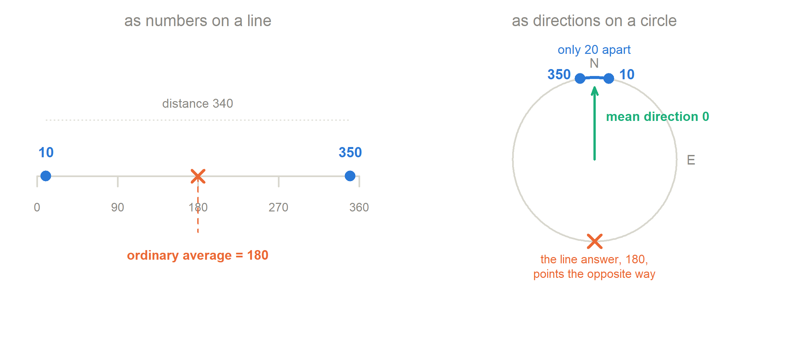
Figure 1: The same two numbers on a line and on a circle. On the line, 350 and 10 look far apart and their midpoint is 180. On the circle they are neighbours near north, and the correct mean direction is 0 degrees — the line answer points the opposite way.
1.3 From the circle to the sphere
A direction in a flat world needs one angle. A direction in three dimensions needs two — think of longitude and latitude. Every possible direction in 3D is one point on the surface of a ball. That surface is where the Kent distribution lives.
The one sentence to keep
Directional data are data whose size carries no information — only the direction matters. So we force every observation to have length exactly 1, and we model the resulting points on a sphere.
Why not just use the normal distribution?
Wrong support. A normal distribution puts probability everywhere in \(\mathbb R^k\), but our data can only be at distance 1 from the origin. Almost all of its probability sits where no data can ever be.
Wrong mean. The average of points on a sphere is usually inside the sphere, not on it. So the “mean” is not a direction at all.
No wrap-around. It thinks \(350^\circ\) and \(10^\circ\) are far apart.
So we need distributions defined on the sphere itself. The von Mises–Fisher and Kent distributions are two of them.
a list of \(k\) numbers, for example \((u_1,u_2,u_3)\)
\(\mathbb R^{k}\)
all possible lists of \(k\) real numbers
\(\|\mathbf u\|\)
the length of the vector, \(\sqrt{u_1^2+\cdots+u_k^2}\)
\(\|\mathbf u\|=1\)
we keep only the lists whose length is exactly 1
\(S^{k-1}\)
the set of all such lists
Why the superscript \(k-1\) and not \(k\)? Take \(k=3\). A point in \(\mathbb R^3\) needs three numbers, but a point on the sphere needs only two — longitude and latitude — because the third is forced by \(\|\mathbf u\|=1\). One constraint removes one dimension. So \(S^{2}\) is a two-dimensional surface living inside three-dimensional space.
2.1 A point is a direction
Stand at the centre of the ball and point your arm at some point on the surface. Your arm now shows a direction. Every direction hits the surface in exactly one place, and every place corresponds to exactly one direction. “Point on the sphere” and “direction in space” are two names for the same thing.
Three points on \(S^2\)
point
check the length
where it is
\((0,0,1)\)
\(0+0+1=1\) ✓
the north pole
\((1,0,0)\)
\(1+0+0=1\) ✓
on the equator, facing us
\((0.5,0.5,0.7071)\)
\(0.25+0.25+0.5=1\) ✓
north of the equator, between the first two axes
A non-example: \((1,1,1)\) is not on the sphere, because \(1+1+1=3\neq1\). To put it on the sphere, divide by its length \(\sqrt3\), giving \((0.577,0.577,0.577)\). Dividing a vector by its own length is called normalising, and we will do it many times.
Figure 2: The unit sphere \(S^2\) with the three points from the table. Faint lines are like longitude and latitude on a globe; the part of the wire frame behind the sphere is drawn lighter. The dotted line from the centre to each point is the ‘arm’ you point with — that is the direction the point stands for.
3 Compositions become points on a sphere
This is the bridge, and it is one square root. It is exact — no approximation anywhere.
3.1 What a composition is
A composition is a vector of proportions. The parts are never negative and they add up to one:
Soil texture is a good example: the fractions of sand, silt and clay in a sample. The set of all such vectors is the simplex, \(\Delta^{k-1}\). For \(k=3\) it is a flat triangle in 3D space with corners \((1,0,0)\), \((0,1,0)\) and \((0,0,1)\).
So \(\|\mathbf u\|=1\) and \(\mathbf u\) is on the sphere. Notice that this is the third point from the table in Section 2 — it was a composition all along.
Why it always works
Squaring undoes the square root: \(u_j^2=z_j\). So \(\sum_j u_j^2=\sum_j z_j=1\), which is exactly the condition \(\|\mathbf u\|=1\). The constraint “the parts sum to one” becomes the constraint “the squares sum to one”. Nothing is lost: you get the composition back with \(\mathbf z=\mathbf u^2\), componentwise.
3.3 Which part of the sphere?
Square roots are never negative, so \(u_j\ge0\) for every \(j\). The image can only land in the corner of the sphere where all coordinates are positive — the positive orthant. For \(k=3\) that is one eighth of the globe.
show the R code that drew this
## a low, oblique eye direction, so the gap between the flat triangle## and the curved sphere is actually visibleV <-view_basis(c(1.05, 0.62, 0.52))blank(xr =c(-0.92, 0.92), yr =c(-0.70, 1.05), mar =c(0.1, 0.1, 0.1, 0.1))for (i in1:3) { e <-rep(0, 3); e[i] <-1.18; seg3(c(0,0,0), e, V, pal$rule, lwd =1.3) }Tri <-prj(rbind(c(1,0,0), c(0,1,0), c(0,0,1)), V)polygon(Tri[, 1], Tri[, 2], col =tp(pal$ink2, 0.11), border =tp(pal$ink2, 0.50), lwd =1.2)draw_sphere(V, octant =TRUE)SIMP <-rbind(c(.25,.25,.50), c(.60,.25,.15), c(.15,.65,.20), c(.34,.33,.33),c(.10,.20,.70), c(.45,.10,.45), c(.20,.45,.35), c(.70,.15,.15))for (i inseq_len(nrow(SIMP))) { z <- SIMP[i, ]; u <-sqrt(z)seg3(z, u, V, pal$mu, lwd =1.3, lty =3) Qz <-prj(matrix(z, ncol =3), V); Qu <-prj(matrix(u, ncol =3), V)points(Qz[1, 1], Qz[1, 2], pch =16, cex =0.85, col = pal$ink2)points(Qu[1, 1], Qu[1, 2], pch =16, cex =1.15, col = pal$g2)}legend("topleft", bty ="n", cex =0.74, text.col = pal$ink2, y.intersp =1.15,pch =16, col =c(pal$ink2, pal$g2),legend =c("composition z, on the flat simplex","square root u, on the sphere"))text(0, -0.63, "the dotted arrows show the square root pushing each point outward",cex =0.72, col = pal$mut)
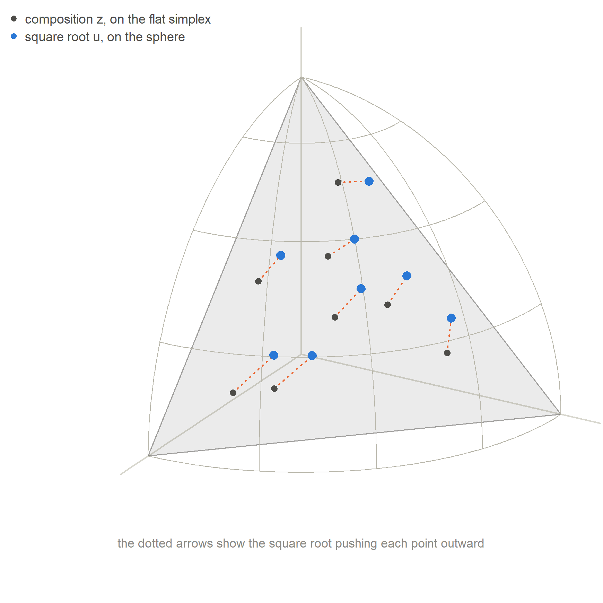
Figure 3: The square-root map from the simplex to the sphere. The flat grey triangle is the simplex: every three-part composition is one point on it. The curved wire patch is the positive eighth of the sphere. Each dotted line joins a composition (small dark dot) to its square root (blue dot). The map pushes every point outward onto the curved surface, and it is one-to-one.
Try it yourself build a composition and watch where it lands
drag to rotate · scroll to zoom
The three sliders are rescaled so they always add up to 1, which is what makes them a composition. Watch two things. First, the dark point stays on the flat triangle and the blue point stays on the curved surface, always joined by the orange line: that line is the square-root map. Second, the further the composition sits from the middle, the further the square root has to push it outward.
3.4 What does the square root actually do?
It inflates the small parts. Compare \(z=0.01\) and \(z=0.04\). On the simplex they differ by 0.03; after the square root they are 0.1 and 0.2, a difference of 0.1 — more than three times as much. The difference between 1% and 4% clay is scientifically large, but on a raw scale it looks tiny.
It gives a sensible notion of distance. On the sphere the natural distance between two compositions is the angle between them, which is closely related to the classical Hellinger distance between two probability vectors. The geometry is not arbitrary.
Compared with log-ratio methods
The usual alternative is a log-ratio transform (alr, clr, ilr). Those need every part to be strictly positive, because \(\log 0=-\infty\). The square root has no such problem: \(z_j=0\) simply maps to \(u_j=0\), a point on the boundary of the orthant. This matters constantly in real data.
4 Why not just use von Mises–Fisher?
We need a distribution on the sphere. The simplest good one is von Mises–Fisher. Learn it first, then find out what it cannot do.
The two parameters of Equation 4, plus its constant
parameter
what it is
\(\boldsymbol\mu\)
the mean direction; a unit vector. Where the distribution is centred — the peak.
\(\kappa\ge0\)
the concentration. How tightly the data cluster around \(\boldsymbol\mu\). Like the reciprocal of a variance.
\(c_k(\kappa)\)
the normalising constant; carries no shape information. For \(k=3\) it is \(\kappa/(4\pi\sinh\kappa)\).
Reading the exponent
The only place \(\mathbf u\) appears is in \(\boldsymbol\mu^{\!\top}\mathbf u\), the dot product of two unit vectors, so \(\boldsymbol\mu^{\!\top}\mathbf u=\cos\vartheta\) where \(\vartheta\) is the angle between them. The density is therefore \(f(\mathbf u)\propto e^{\kappa\cos\vartheta}\), and everything follows from that:
\(\vartheta=0\) (you are at \(\boldsymbol\mu\)): \(\cos\vartheta=1\), the density is largest. So \(\boldsymbol\mu\) is the mode.
\(\vartheta=90^\circ\): \(\cos\vartheta=0\), the density equals the uniform level.
\(\vartheta=180^\circ\): \(\cos\vartheta=-1\), the density is smallest.
\(\kappa=0\): the exponent is 0 everywhere. vMF with \(\kappa=0\) is the uniform distribution on the sphere.
\(\kappa\) large: \(e^{\kappa\cos\vartheta}\) falls away fast, so the data hug \(\boldsymbol\mu\). The typical angular distance is about \(1/\sqrt\kappa\) radians, so \(\kappa=100\) gives a cloud of radius roughly \(0.1\) rad \(\approx6^\circ\).
Figure 4: The effect of the concentration \(\kappa\). Each panel shows 300 simulated points seen looking straight down the \(\boldsymbol\mu\) axis, with contours where the density is 90, 70, 50, 30 and 10 percent of its peak. Top row: all three on one common scale, so you can see the cloud shrink as \(\kappa\) grows. Bottom row: each panel zoomed to its own cloud, so you can see that the shape never changes. The contours are circles in all six panels — that is the limitation vMF cannot escape.
4.2 The limitation: vMF can only make round clouds
The contours in Figure 4 are circles. Always. That is forced by the formula, not an accident of the picture.
The argument is three lines. The density depends on \(\mathbf u\) only through the angle \(\vartheta\). Two points at the same angle from \(\boldsymbol\mu\) therefore get exactly the same density, whichever side of \(\boldsymbol\mu\) they are on. The set of points at a fixed angle from \(\boldsymbol\mu\) is a circle around \(\boldsymbol\mu\). So the contours are circles.
The technical name is rotational symmetry about \(\boldsymbol\mu\): spin the sphere around the \(\boldsymbol\mu\) axis and the density does not change.
A numerical demonstration
Let \(\boldsymbol\mu=(0,0,1)\) and \(\kappa=10\), and take two points the same distance from \(\boldsymbol\mu\) but in different tangent directions:
Both have \(\boldsymbol\mu^{\!\top}\mathbf u=0.9539\) and so exponent \(10\times0.9539=9.539\). The vMF density is identical at the two points. vMF has no way to say “the data spread further in the first direction than in the second”.
Why this matters for compositions
In many soils, sand and clay trade off against each other while silt stays nearly constant. On the sphere that is a cloud which is long in one tangent direction and narrow in the other — an ellipse, not a circle. vMF must pick one number, \(1/\kappa\), for both directions. It will either exaggerate the silt variation or understate the sand–clay variation. No value of \(\kappa\) gets both right.
Figure 5: Round versus elliptical — the whole point of the Kent distribution. Both panels have the same \(\kappa\) and the same scale. Left: vMF contours are perfect circles, so the spread is the same in every direction. Right: Kent contours are ellipses. Look carefully and you will see that Kent has stretched the cloud along \(\boldsymbol\gamma_2\)and squeezed it along \(\boldsymbol\gamma_3\): \(\beta\) redistributes spread between the two directions rather than adding more of it. Everything that follows is about describing, estimating and interpreting that ellipse.
5 The Kent distribution
Now we are ready. Kent takes the vMF exponent and adds one extra piece, which bends the circles into ellipses.
Set \(\beta=0\) and the new part disappears: Equation 5 becomes Equation 4 exactly. So Kent contains vMF as a special case, and can never fit worse.
5.2 Every term, one at a time
\(\kappa\,\boldsymbol\mu^{\!\top}\mathbf u\) — the pull toward the centre
What it is: a number times the cosine of the angle to \(\boldsymbol\mu\). Its job: it makes the density large near \(\boldsymbol\mu\) and small far away. Statistically: it fixes the location and the overall tightness. Geometrically: on its own it would produce circular contours. If \(\kappa\) grows: the cloud shrinks toward \(\boldsymbol\mu\) in all directions at once.
\((\boldsymbol\gamma_2^{\!\top}\mathbf u)^2\) — how far along the first axis
\(\boldsymbol\gamma_2\) is a unit vector perpendicular to \(\boldsymbol\mu\). The dot product \(\boldsymbol\gamma_2^{\!\top}\mathbf u\) measures how far \(\mathbf u\) has moved away from \(\boldsymbol\mu\)in the \(\boldsymbol\gamma_2\) direction. It is a coordinate. Squaring it removes the sign, so moving left and moving right count the same — which is why the ellipse is symmetric.
\((\boldsymbol\gamma_3^{\!\top}\mathbf u)^2\) — how far along the second axis
The same thing for the other direction. \(\boldsymbol\gamma_3\) is perpendicular to both \(\boldsymbol\mu\) and \(\boldsymbol\gamma_2\).
\(\beta\bigl[(\boldsymbol\gamma_2^{\!\top}\mathbf u)^2-(\boldsymbol\gamma_3^{\!\top}\mathbf u)^2\bigr]\) — the difference
This is the heart of Kent. Notice the minus sign. The term adds density when \(\mathbf u\) leans toward \(\boldsymbol\gamma_2\) and subtracts density when \(\mathbf u\) leans toward \(\boldsymbol\gamma_3\). The distribution becomes generous in one direction and stingy in the other, and that stretches the cloud into an ellipse.
Why a difference, and not two separate numbers? Because on the sphere
always. Adding the same constant to all three squared terms changes nothing except the normalising constant, so only the difference between the two tangent directions is identifiable. Writing the coefficients as \(\beta_2=\beta\) and \(\beta_3=-\beta\), which sum to zero, is the standard way of removing that redundancy.
\(c(\kappa,\beta)\) — the normalising constant
The number that makes the density integrate to 1. It does not depend on \(\boldsymbol\mu,\boldsymbol\gamma_2,\boldsymbol\gamma_3\) at all, because rotating the sphere cannot change a total. For \(k=3\),
which a computer evaluates in a few terms. You do not need it to understand the shape, and you do not need it for contours or simulation, because those use only ratios of densities, in which the constant cancels.
5.3 A numerical example
Take \(\boldsymbol\mu=(0,0,1)\), \(\boldsymbol\gamma_2=(1,0,0)\), \(\boldsymbol\gamma_3=(0,1,0)\), \(\kappa=10\), \(\beta=3\), and the same two points as in Section 4.
Table 1: The same calculation at two points the same distance from \(\boldsymbol\mu\). vMF gives them equal density; Kent does not.
The ratio of the two densities is \(e^{9.809-9.269}=e^{0.54}\approx1.72\). The point lying in the \(\boldsymbol\gamma_2\) direction is 1.72 times more likely than the point the same distance away in the \(\boldsymbol\gamma_3\) direction. Under vMF that ratio would be exactly 1. That single number is the whole difference between the two models.
Where Kent sits in the bigger family
Both vMF and Kent belong to the Fisher–Bingham family, \(f(\mathbf u)\propto\exp(\boldsymbol\theta^{\!\top}\mathbf u+\mathbf u^{\!\top}A\mathbf u)\). You get Kent by choosing \(\boldsymbol\theta=\kappa\boldsymbol\mu\) and \(A=\boldsymbol\Gamma\,\mathrm{diag}(0,\beta,-\beta)\,\boldsymbol\Gamma^{\!\top}\) with \(\boldsymbol\Gamma=[\boldsymbol\mu,\boldsymbol\gamma_2,\boldsymbol\gamma_3]\). The essential restriction is that \(\boldsymbol\mu\) is an eigenvector of \(A\): the linear pull and the axes of the quadratic part point in compatible directions. That is what keeps the density unimodal, symmetric about \(\boldsymbol\mu\), and elliptical.
6 Every parameter, one by one
Five objects: \(\boldsymbol\mu\), \(\boldsymbol\gamma_2\), \(\boldsymbol\gamma_3\), \(\kappa\), \(\beta\). Two are numbers; three are directions.
6.1\(\boldsymbol\mu\) — the mean direction
A unit vector saying where the cloud sits on the sphere. It is the mode and also the mean direction. Change it and the whole cloud slides to a different place; its shape does not change.
6.2\(\boldsymbol\gamma_2\) — the long axis
A unit vector perpendicular to \(\boldsymbol\mu\), pointing along the direction of most spread. Changing it rotates the ellipse around the \(\boldsymbol\mu\) axis, like turning a steering wheel. The cloud stays in the same place and keeps its shape; only its orientation changes.
6.3\(\boldsymbol\gamma_3\) — the short axis
Perpendicular to \(\boldsymbol\mu\)and to \(\boldsymbol\gamma_2\); the direction of least spread. In three dimensions it is not a free choice: once you know \(\boldsymbol\mu\) and \(\boldsymbol\gamma_2\), the only remaining perpendicular direction is \(\pm\boldsymbol\gamma_3\).
A dot product of two unit vectors is zero exactly when they are at \(90^\circ\). So Equation 6 says: all three vectors are mutually perpendicular, forming a right-angled frame like the corner of a room. Why must this hold?
\(\boldsymbol\mu^{\!\top}\boldsymbol\gamma_2=0\) and \(\boldsymbol\mu^{\!\top}\boldsymbol\gamma_3=0\). The \(\boldsymbol\gamma\)’s describe how the data spread around\(\boldsymbol\mu\), and “around” means sideways, not along. A direction with a component along \(\boldsymbol\mu\) would partly be describing “closer to or further from the centre”, which is already the job of \(\kappa\). Perpendicular means the jobs do not overlap.
\(\boldsymbol\gamma_2^{\!\top}\boldsymbol\gamma_3=0\). The two axes of an ellipse are always at right angles. At, say, \(60^\circ\) they would partly measure the same thing, and \(\lambda_2,\lambda_3\) would not separate cleanly into “most spread” and “least spread”.
Put the three side by side as columns: \(\boldsymbol\Gamma=[\,\boldsymbol\mu\;\;\boldsymbol\gamma_2\;\;\boldsymbol\gamma_3\,]\), with \(\boldsymbol\Gamma^{\!\top}\boldsymbol\Gamma=I_3\). A matrix with this property is called orthogonal and represents a rotation. So the three constraints together simply say: \(\boldsymbol\Gamma\) is the rotation that takes the standard axes to the natural axes of the data.
6.5\(\kappa\) — concentration, and \(\beta\) — ovalness
\(\kappa\) controls how tightly the data cluster; it changes the size of the ellipse, not its shape. \(\beta\) controls how much longer the long axis is than the short one; it changes the shape, not the location.
6.6 The constraint \(0\le 2\beta<\kappa\)
This looks technical but has a clear geometric reason. In Section 7 we show that the variance of the data along each axis is
If \(2\beta<\kappa\), then \(\kappa-2\beta>0\) and \(\lambda_2\) is a positive, finite variance. Good.
If \(2\beta=\kappa\), then \(\lambda_2=\infty\). The cloud is infinitely long in the \(\boldsymbol\gamma_2\) direction — it stops being a bump around \(\boldsymbol\mu\).
If \(2\beta>\kappa\), then \(\lambda_2\) is negative, which is impossible for a variance. What actually happens is that \(\boldsymbol\mu\) stops being the peak: the density develops two peaks either side of \(\boldsymbol\mu\) along \(\boldsymbol\gamma_2\), like a saddle. Still a valid density, but no longer the single elliptical bump we wanted.
\(\beta\ge0\) is a labelling convention, not a restriction. A negative \(\beta\) would just swap the roles of \(\boldsymbol\gamma_2\) and \(\boldsymbol\gamma_3\). We fix \(\beta\ge0\) so that \(\boldsymbol\gamma_2\) always means “long axis”.
Turning Equation 7 around gives the two formulas we will use to estimate the parameters in Section 15:
Check the logic: \(\lambda_2>\lambda_3\) gives \(1/\lambda_3>1/\lambda_2\), hence \(\beta>0\). Consistent. And the ellipse’s semi-axes are proportional to \(\sqrt{\lambda_2}\) and \(\sqrt{\lambda_3}\), so how oval it is depends on
Figure 6: The two parameters do different jobs. Top row:\(\kappa\) fixed at 60 while \(\beta\) grows from 0 to almost its limit \(\kappa/2=30\). The cloud keeps roughly the same overall size but becomes steadily more elongated; at \(\beta=0\) it is a circle, which is vMF. Bottom row:\(\beta\) held at 40 percent of its limit while \(\kappa\) grows. The ellipse keeps exactly the same shape (the axis ratio is printed above each panel) and only shrinks. This is what ‘ovalness’ and ‘concentration’ mean, separately.
Try it yourself the two parameters, live
left: looking down the μ axis · right: drag to rotate the globe
The second slider is shown as a fraction of its maximum, because the legal range of \(\beta\) depends on \(\kappa\): the constraint is \(\beta<\kappa/2\). Two things to try. Slide \(\beta\) all the way to 0 and the ellipse becomes a circle — that is von Mises–Fisher. Then push \(\beta\) towards 1 and watch \(\lambda_2\) grow without limit while the ellipse stretches: that is the constraint \(2\beta<\kappa\) becoming binding.
7 The picture that explains everything
The sphere, the mean direction, the flat plane that touches it, and the ellipse drawn on that plane.
7.1 What is the tangent plane?
Put a sphere on a table. The table touches the sphere at exactly one point. That table is the tangent plane at that point. Formally,
the set of all directions perpendicular to \(\boldsymbol\mu\). For \(k=3\) it is an ordinary flat plane, two-dimensional. In general it has \(k-1\) dimensions — one less than the space, because “straight up along \(\boldsymbol\mu\)” has been removed.
Why do we care? Because near \(\boldsymbol\mu\) the curved sphere and the flat plane are almost the same. If the data are concentrated, the cloud occupies only a small patch, and on a small patch the Earth looks flat. This lets us borrow everything we know about the multivariate normal distribution.
7.2 Tangent coordinates
For an observation \(\mathbf u\), its tangent part is
\[\mathbf v=(I-\boldsymbol\mu\boldsymbol\mu^{\!\top})\mathbf u .\]
In words: take \(\mathbf u\) and throw away the piece pointing along \(\boldsymbol\mu\). What is left is the sideways displacement, and it lies in the tangent plane. The two numbers
are its coordinates along the two axes. Note \(\boldsymbol\gamma_m^{\!\top}\mathbf v=\boldsymbol\gamma_m^{\!\top}\mathbf u\), because \(\boldsymbol\gamma_m\) is perpendicular to \(\boldsymbol\mu\) — so you can use \(\mathbf u\) directly. These are exactly the quantities in Equation 5.
7.3 The key approximation
When \(\kappa\) is large, write \(\vartheta\) for the angle from \(\boldsymbol\mu\). A second-order Taylor expansion gives \(\cos\vartheta\approx1-\tfrac12(v_2^2+v_3^2)\), so the Kent exponent becomes
Compare this with the exponent of a two-dimensional normal density with independent components, \(-\tfrac12\bigl(v_2^2/\lambda_2+v_3^2/\lambda_3\bigr)\). They match exactly when \(\lambda_2=1/(\kappa-2\beta)\) and \(\lambda_3=1/(\kappa+2\beta)\) — which is Equation 7.
The single most useful fact in the subject
Near its centre, a Kent distribution is a two-dimensional normal distribution drawn on the tangent plane, with variance \(\lambda_2\) along \(\boldsymbol\gamma_2\) and \(\lambda_3\) along \(\boldsymbol\gamma_3\).
This is where the \(\lambda\)’s come from, it explains the constraint on \(\beta\), and it is what makes estimation easy. For vMF, set \(\beta=0\): both variances are \(1/\kappa\). Same in every direction. Round.
show the R code that drew this
MU7 <-unit(sqrt(c(0.50, 0.30, 0.20)))B7 <-householder_B(MU7)a7 <-35* pi/180G2_7 <-unit(cos(a7)*B7[,1] +sin(a7)*B7[,2])G3_7 <-unit(-sin(a7)*B7[,1] +cos(a7)*B7[,2])K7 <-180; BET7 <-70S7 <-to_frame(rkent_std(250, K7, BET7, 101), MU7, G2_7, G3_7)layout(matrix(c(1, 2), 1, 2), widths =c(1.15, 1))## look from 55 degrees off mu, so the plane is seen obliquely and the## mean-direction arrow is not foreshortened into a dotphi <-55* pi/180V <-view_basis(cos(phi)*MU7 +sin(phi)*B7[, 1])blank(1.28)draw_sphere(V)tangent_patch(MU7, B7, 0.46, V)sphere_pts(S7, V, cex =0.5)arrow3(c(0, 0, 0), MU7 *1.20, V, pal$mu, lwd =2.6)lab3(MU7 *1.24, V, expression(hat(mu)), pal$mu, pos =3)s2 <-3.2*sqrt(1/(K7 -2*BET7)); s3 <-3.2*sqrt(1/(K7 +2*BET7))arrow3(MU7, MU7 + s2*G2_7, V, pal$g2, lwd =2.6)arrow3(MU7, MU7 + s3*G3_7, V, pal$g3, lwd =2.6)lab3(MU7 + s2*G2_7, V, expression(gamma[2]), pal$g2, pos =1)lab3(MU7 + s3*G3_7, V, expression(gamma[3]), pal$g3, pos =4)text(0, -1.20, "the tangent plane, seen edge-on at 55 degrees",cex =0.72, col = pal$mut)tangent_panel(K7, BET7, 0.30, pts =cbind(S7 %*% G2_7, S7 %*% G3_7),n_pts =0, main ="seen from straight down the mu axis")layout(1)
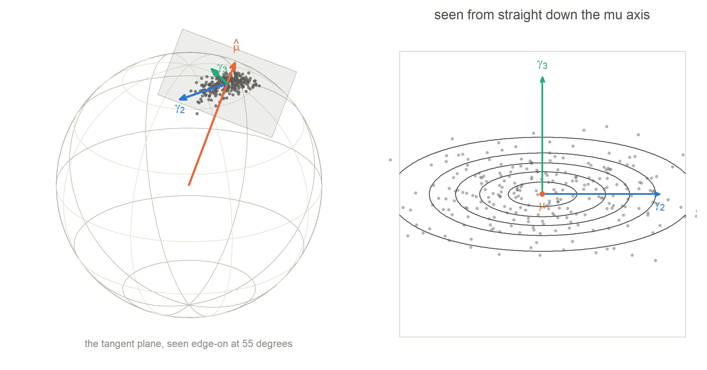
Figure 7: Sphere, mean direction, tangent plane, data cloud and axes, all in one picture. The orange arrow is \(\hat{\boldsymbol\mu}\), here the square root of the composition \((0.50, 0.30, 0.20)\); it pierces the sphere at the centre of the data. The pale square is the tangent plane, touching the sphere at exactly that point. Grey dots are 250 draws from a Kent distribution. Inside the plane sit the two axes: \(\boldsymbol\gamma_2\), along which the cloud is long, and \(\boldsymbol\gamma_3\), along which it is short. The right-hand panel is the same thing seen from straight down the orange arrow.
show the R code that drew this
l2 <-1.0; l3 <-0.25# lambda ratio 4, so semi-axes differ by 2a <-sqrt(l2); b <-sqrt(l3)set.seed(9)P <-cbind(rnorm(220, 0, a), rnorm(220, 0, b))par(mar =c(0.4, 0.4, 0.4, 0.4), family ="sans")plot(NA, xlim =c(-2.9, 2.9), ylim =c(-1.95, 1.65), asp =1,axes =FALSE, xlab ="", ylab ="")th <-seq(0, 2*pi, length.out =400)lines(2*a*cos(th), 2*b*sin(th), col = pal$rule, lwd =1.4, lty =2)points(P, pch =16, cex =0.5, col =tp(pal$dot, 0.40))lines(a*cos(th), b*sin(th), col = pal$ink2, lwd =2)arrows(0, 0, a, 0, length =0.075, col = pal$g2, lwd =2.6, angle =22)arrows(0, 0, 0, b, length =0.075, col = pal$g3, lwd =2.6, angle =22)points(0, 0, pch =16, cex =1.4, col = pal$mu)points(0, 0, pch =1, cex =2.8, col = pal$mu, lwd =1.2)## mu, labelled below-left and away from the ellipsesegments(-0.06, -0.10, -0.62, -0.70, col =tp(pal$mu, 0.6), lwd =1)text(-0.66, -0.78, expression(hat(mu)), col = pal$mu, cex =1.0, font =2, pos =2)text(-0.62, -1.02, "pointing at you, out of the page", col = pal$mu, cex =0.68, pos =2)## gamma2 labelled to the right, gamma3 labelled up and to the lefttext(a +0.10, 0.14, expression(gamma[2] *" long axis"),col = pal$g2, cex =0.88, pos =4, font =2)text(a +0.10, -0.12, expression(paste("semi-axis ", sqrt(lambda[2]))),col = pal$g2, cex =0.8, pos =4)segments(0.02, b +0.04, -0.75, b +0.55, col =tp(pal$g3, 0.6), lwd =1)text(-0.80, b +0.62, expression(gamma[3] *" short axis"),col = pal$g3, cex =0.88, pos =2, font =2)text(-0.80, b +0.36, expression(paste("semi-axis ", sqrt(lambda[3]))),col = pal$g3, cex =0.8, pos =2)## a measuring bracket under the long semi-axisyb <--b -0.42segments(0, yb, a, yb, col = pal$g2, lwd =1.2)segments(c(0, a), yb -0.09, c(0, a), yb +0.09, col = pal$g2, lwd =1.2)text(a/2, yb -0.30, expression(sqrt(lambda[2])), col = pal$g2, cex =0.88)text(-2.85, -1.72, "solid = 1 standard deviation dashed = 2 standard deviations",col = pal$mut, cex =0.74, pos =4)text(2.85, -1.72,expression(paste(lambda[2] > lambda[3], " means more spread along ", gamma[2])),col = pal$ink, cex =0.8, pos =2)
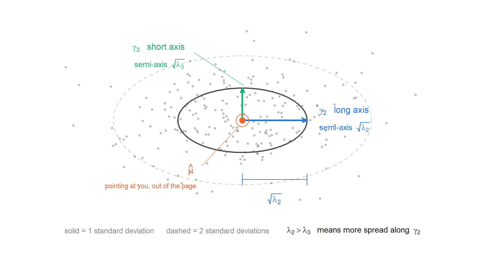
Figure 8: The tangent-plane ellipse, fully labelled. We are standing on the tangent plane, looking at it face on: \(\boldsymbol\mu\) points directly at you, out of the page, so it appears as a single point at the centre. The solid ellipse is the one-standard-deviation contour. Its semi-axis along \(\boldsymbol\gamma_2\) has length \(\sqrt{\lambda_2}\); its semi-axis along \(\boldsymbol\gamma_3\) has length \(\sqrt{\lambda_3}\). Because \(\lambda_2 > \lambda_3\), the first is longer — there is more spread along \(\boldsymbol\gamma_2\).
8 The second-moment matrix
One matrix that stores how the data are spread out in every direction at once.
the \(i\)-th observation, a unit vector; a \(k\times1\) column
\(\mathbf u_i^{\!\top}\)
the same thing written as a row, \(1\times k\)
\(\mathbf u_i\mathbf u_i^{\!\top}\)
column times row \(=\) a \(k\times k\) matrix with \((j,l)\) entry \(u_{ij}u_{il}\); an outer product
\(\frac1n\sum_i\)
average those \(n\) matrices, entry by entry
\(\hat M\)
a \(k\times k\) symmetric matrix; entry \((j,l)\) is the average of \(u_{ij}u_{il}\)
The diagonal entry \(\hat M_{jj}\) is the average of \(u_{ij}^2\): how much of the data’s “energy” lies along coordinate axis \(j\). The off-diagonal entry \(\hat M_{jl}\) is the average of \(u_{ij}u_{il}\): whether coordinates \(j\) and \(l\) tend to be large together.
Note carefully: this is the raw second moment, not the covariance. We do not subtract a mean. That is on purpose — on a sphere the natural centre is a direction, not a point.
8.1 Why the trace is always 1
The trace is the sum of the diagonal entries. Here
The reason is simply that every observation has length one. So \(\operatorname{tr}(\hat M)=1\) is automatic, not an assumption — and it is an excellent arithmetic check on your code.
\(\hat M_{33}=0.94\) is huge. Almost all of the length of every observation is in the third coordinate, so the data cluster near \((0,0,1)\) — the north pole. Hence \(\hat{\boldsymbol\mu}\approx(0,0,1)\).
\(\hat M_{11}=\hat M_{22}=0.03\) are small. Only a little energy is sideways. Together they account for \(0.06\): the total spread away from the pole.
\(\hat M_{12}=0.02\) is not zero. The first and second coordinates move together, so the sideways cloud is tilted — it lies along the diagonal direction \((1,1,0)\), not along either coordinate axis.
\(\hat M_{13}=\hat M_{23}=0\). No systematic link between sideways position and height, which is what we expect for a symmetric bump at the pole.
8.3 A useful identity
Because \([\hat{\boldsymbol\mu},\mathbf b_1,\mathbf b_2]\) is an orthogonal frame, the trace splits into the part along \(\hat{\boldsymbol\mu}\) and the part in the tangent plane:
In the example \(\hat{\boldsymbol\mu}^{\!\top}\hat M\hat{\boldsymbol\mu}=0.94\), so the total tangent spread must be \(1-0.94=0.06\). Remember that number: we are about to compute \(S_L\) and its diagonal will sum to exactly \(0.06\).
8.4 How do we get \(\hat{\boldsymbol\mu}\)?
Two recipes, equivalent in practice for concentrated data:
Normalised sample mean. Compute \(\bar{\mathbf u}=\frac1n\sum_i\mathbf u_i\) (a vector inside the sphere), then \(\hat{\boldsymbol\mu}=\bar{\mathbf u}/\|\bar{\mathbf u}\|\). The discarded length \(\bar R=\|\bar{\mathbf u}\|\) lies in \([0,1]\) and is informative in its own right: near 1 means very concentrated. This is the standard choice for Kent.
Leading eigenvector of \(\hat M\). The direction capturing the most of \(\operatorname{tr}(\hat M)\). This ignores the sign of the data and is the right choice for axial data.
We use the first.
9 A basis for the tangent plane
The Householder construction. This is where most of the confusion lives, so we go slowly.
9.1 The problem
We have a flat, two-dimensional plane floating in three-dimensional space. We want to describe points on it with two numbers, not three. To do that we need two reference directions inside the plane. That pair is called a basis.
The rulers on a table
Put two rulers flat on a table, crossing at right angles. Now any spot on the table can be described by two numbers: “40 cm along the first ruler, 15 cm along the second”. Those two rulers are a basis for the table.
Here is the crucial part. You could have put the rulers down at any angle. Rotate both by \(30^\circ\) and they still work perfectly: every spot still gets two numbers. The numbers change, but the spots do not move. The rulers are your choice; the table and whatever is lying on it are not.
9.2 The Householder construction
We need a rule that, given any \(\hat{\boldsymbol\mu}\), produces two perpendicular unit vectors inside the tangent plane — automatically, and never breaking down.
A reflection is a mirror. If \(\mathbf h\) is the direction perpendicular to the mirror plane, the reflection matrix is
Now the trick. We want a mirror that sends \(\mathbf e_1=(1,0,0)^{\!\top}\) onto \(\hat{\boldsymbol\mu}\). The mirror that does this is the one perpendicular to their difference, so set \(\mathbf h=\mathbf e_1-\hat{\boldsymbol\mu}\). A short calculation then confirms \(H\mathbf e_1=\hat{\boldsymbol\mu}\).
Why does that help?\(H\) is orthogonal, so its three columns are mutually perpendicular unit vectors, and its first column is \(\hat{\boldsymbol\mu}\). Therefore the other two columns are automatically perpendicular to \(\hat{\boldsymbol\mu}\) — which means they lie in the tangent plane:
Done. \(\mathbf B\) is our pair of rulers. It satisfies \(\mathbf B^{\!\top}\mathbf B=I_2\) (unit length, perpendicular) and \(\mathbf B^{\!\top}\hat{\boldsymbol\mu}=\mathbf 0\) (they lie in the plane).
Worked numerically for \(\hat{\boldsymbol\mu}=(0,0,1)\)
all.equal(H[, 1], mu_ex) # first column is mu, as promised
[1] TRUE
show the R code that drew this
B_ex <- H[, 2:3] # the two rulerscrossprod(B_ex) # B'B = I2 : unit length and perpendicular
[,1] [,2]
[1,] 1 0
[2,] 0 1
show the R code that drew this
drop(crossprod(B_ex, mu_ex)) # B'mu = 0 : they lie in the tangent plane
[1] 0 0
So \(\mathbf b_1=(0,1,0)\) and \(\mathbf b_2=(1,0,0)\). Notice the order: the construction gives \(\mathbf b_1=\mathbf e_2\) and \(\mathbf b_2=\mathbf e_1\), not the order you might have guessed. That is fine, and it is exactly the point — the rule is arbitrary, and the arbitrariness will not matter.
One edge case: if \(\hat{\boldsymbol\mu}=\mathbf e_1\) exactly then \(\mathbf h=\mathbf 0\) and Equation 12 divides by zero. Software reflects onto \(-\mathbf e_1\) instead. It never happens with real data.
9.3 The distinction you must not blur
\(\mathbf B\) is not \(\mathbf K\)
\(\mathbf B(\hat{\boldsymbol\mu})\)
\(\mathbf K\), the Kent frame
what it is
two arbitrary perpendicular directions in the tangent plane
the two principal directions of the data: long axis and short axis
what it depends on
only \(\hat{\boldsymbol\mu}\), and on a convention (we chose \(\mathbf e_1\))
the data — where they actually spread
the analogy
where you happened to lay the rulers
the shape of the stain on the table
unique?
no — infinitely many valid choices
yes up to sign, provided \(\lambda_2\neq\lambda_3\)
a parameter?
no — it is scaffolding
yes — \(\boldsymbol\gamma_2,\boldsymbol\gamma_3\) are model parameters
\(\mathbf B\) is a coordinate system and it knows nothing about the data. It is built from \(\hat{\boldsymbol\mu}\) alone, before we have looked at the shape of the cloud. Two analysts using two conventions get two different \(\mathbf B\)’s, and that is allowed. The job of Section 10 to Section 12 is to start from \(\mathbf B\), look at the data, and turn the rulers until they line up with the ellipse. Only then do we have \(\mathbf K\).
show the R code that drew this
layout(matrix(c(1, 2), 1, 2), widths =c(1.15, 1))phi <-55* pi/180V <-view_basis(cos(phi)*MU7 +sin(phi)*B7[, 1])blank(1.28)draw_sphere(V)tangent_patch(MU7, B7, 0.46, V)sphere_pts(S7, V, cex =0.5)arrow3(c(0, 0, 0), MU7 *1.20, V, pal$mu, lwd =2.6)lab3(MU7 *1.24, V, expression(hat(mu)), pal$mu, pos =3)r <-0.34arrow3(MU7, MU7 + r*B7[, 1], V, pal$bs, lwd =2.4, lty =2)arrow3(MU7, MU7 + r*B7[, 2], V, pal$bs, lwd =2.4, lty =2)lab3(MU7 + r*B7[, 1], V, expression(b[1]), pal$bs, pos =1)lab3(MU7 + r*B7[, 2], V, expression(b[2]), pal$bs, pos =4)## the same, looking down mu: rulers in b-coordinates are the axes,## so the cloud appears rotated by 35 degrees away from themR2 <-0.30tangent_panel(K7, BET7, R2, n_pts =0, axes =FALSE,pts =cbind(S7 %*% B7[, 1], S7 %*% B7[, 2]),main ="looking down mu, in ruler coordinates")arrows(0, 0, 0.82*R2, 0, length =0.06, col = pal$bs, lwd =2.4, lty =2, angle =22)arrows(0, 0, 0, 0.82*R2, length =0.06, col = pal$bs, lwd =2.4, lty =2, angle =22)text(0.82*R2, 0, expression(b[1]), col = pal$bs, pos =1, cex =0.9, font =2)text(0, 0.82*R2, expression(b[2]), col = pal$bs, pos =4, cex =0.9, font =2)points(0, 0, pch =16, cex =0.9, col = pal$mu)layout(1)
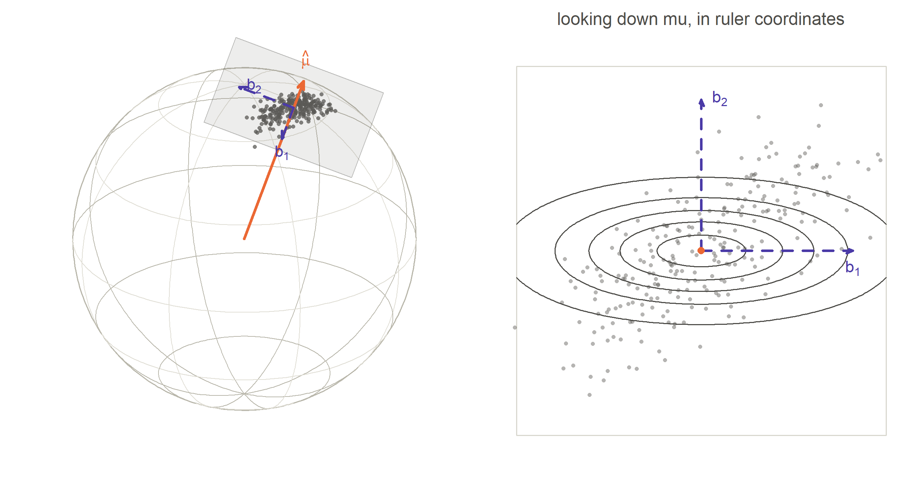
Figure 9: The Householder rulers, and the ellipse they do not know about. The violet dashed arrows are \(\mathbf b_1\) and \(\mathbf b_2\), computed from \(\hat{\boldsymbol\mu}\) alone. The data cloud is clearly stretched in some direction, and that direction is not\(\mathbf b_1\). Nothing is wrong: the rulers were never meant to line up with the data. Finding the angle between them is the estimation problem. The right-hand panel looks straight down \(\hat{\boldsymbol\mu}\), where the mismatch is obvious.
Note what the right-hand panel of Figure 9 shows: the contours are drawn in the principal frame, but the data are plotted in ruler coordinates, so the cloud sits at an angle to the violet axes. That angle is precisely what the eigen-decomposition is going to recover.
10 Projecting the second moment onto the plane
\[S_L=\mathbf B^{\!\top}\hat M\,\mathbf B .
\tag{13}\]
Check the sizes: \(\mathbf B^{\!\top}\) is \(2\times3\), \(\hat M\) is \(3\times3\), \(\mathbf B\) is \(3\times2\), so the product is \(2\times2\). The subscript \(L\) stands for “local” — local to the tangent plane.
10.1 What it actually computes
Write \(\mathbf w_i=\mathbf B^{\!\top}\mathbf u_i\) for the two ruler readings of observation \(i\). Then
So \(S_L\) is nothing more than the second-moment matrix of the two-dimensional ruler readings. We flattened each observation onto the table, read off two numbers, and computed their \(2\times2\) second-moment matrix.
The three distinct entries of \(S_L\)
entry
meaning
\((S_L)_{11}\)
average of \(w_{i1}^2\): how much the data spread along ruler 1
\((S_L)_{22}\)
average of \(w_{i2}^2\): how much they spread along ruler 2
\((S_L)_{12}\)
average of \(w_{i1}w_{i2}\): whether the two readings move together — a covariance in ruler coordinates
10.2 The example, continued
With \(\hat{\boldsymbol\mu}=(0,0,1)\) the Householder basis is \(\mathbf b_1=(0,1,0)\), \(\mathbf b_2=(1,0,0)\), so Equation 13 simply picks entries out of \(\hat M\):
The trace is \(0.06\), matching Equation 11 exactly.
10.3 Why is it not diagonal?
This is the important question. The off-diagonal entry is \(0.02\), not \(0\). A non-zero off-diagonal entry means: the axes of the data ellipse are not lined up with the rulers.
Think of it this way. If the cloud were stretched exactly along ruler 1, then whenever \(w_{i1}\) was large, \(w_{i2}\) would be near zero, so the product \(w_{i1}w_{i2}\) would average to zero. A zero off-diagonal entry means “no tilt”. Here the entry is positive and about two-thirds the size of the diagonal entries, so the tilt is large — and since \((S_L)_{11}=(S_L)_{22}\), it is exactly \(45^\circ\).
And this is not a problem with the data. It is a statement about the rulers: we laid them down at \(45^\circ\) to the ellipse. Turn them by \(45^\circ\) and the off-diagonal entry will vanish.
show the R code that drew this
set.seed(55)n <-170E <-cbind(rnorm(n, 0, sqrt(0.05)), rnorm(n, 0, sqrt(0.01)))A <-rot2(pi/4)P <- E %*%t(A) # cloud with long axis at 45 degreespanel <-function(th, shade, main) { L <-0.62par(mar =c(0.5, 0.5, 1.8, 0.5), family ="sans")plot(NA, xlim =c(-L, L), ylim =c(-L, L), asp =1, axes =FALSE, xlab ="", ylab ="")title(main = main, cex.main =0.92, font.main =1, col.main = pal$ink2)if (shade) {rect(0, 0, L, L, col =tp(pal$g2, 0.08), border =NA)rect(0, 0, -L, -L, col =tp(pal$g2, 0.08), border =NA)text( 0.34, 0.34, expression(w[1]*w[2] >0), col = pal$g2, cex =0.8)text(-0.34, -0.34, expression(w[1]*w[2] >0), col = pal$g2, cex =0.8) }## the one-sigma ellipse of the cloud tt <-seq(0, 2*pi, length.out =300) Ell <-cbind(sqrt(0.05)*cos(tt), sqrt(0.01)*sin(tt)) %*%t(A)points(P, pch =16, cex =0.55, col =tp(pal$dot, 0.45))lines(Ell, col = pal$ink2, lwd =2) d1 <-c(cos(th), sin(th)); d2 <-c(-sin(th), cos(th))for (d inlist(d1, d2)) {arrows(0, 0, 0.55*d[1], 0.55*d[2], length =0.06, col = pal$bs, lwd =2, lty =2, angle =22)arrows(0, 0, -0.55*d[1], -0.55*d[2], length =0.06, col = pal$bs, lwd =2, lty =2, angle =22) }text(0.60*d1[1], 0.60*d1[2], expression(b[1]), col = pal$bs, cex =0.9, font =2)text(0.60*d2[1], 0.60*d2[2], expression(b[2]), col = pal$bs, cex =0.9, font =2)points(0, 0, pch =16, cex =0.9, col = pal$mu)box(col = pal$rule)}par(mfrow =c(1, 2))panel(0, TRUE, "rulers at 45 degrees to the ellipse: off-diagonal = +0.02")panel(pi/4, FALSE, "rulers turned by 45 degrees: off-diagonal = 0")
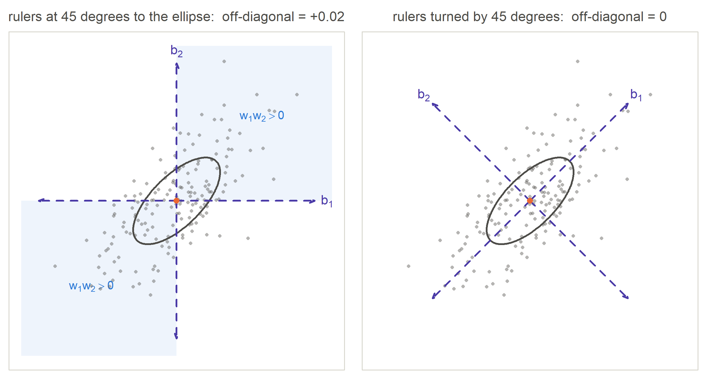
Figure 10: Where the off-diagonal term comes from. Both panels show the same data cloud, looking down at the tangent plane; only the rulers differ. Left: the violet dashed rulers sit at 45 degrees to the ellipse. Points in the two shaded quadrants, where \(w_1\) and \(w_2\) have the same sign, outnumber points in the other two, so the average of \(w_1 w_2\) is positive — that is the \(0.02\). Right: after turning the rulers by 45 degrees they line up with the ellipse, the four quadrants balance, and the off-diagonal entry becomes zero.
11 Eigen-decomposition
The machine that finds the right angle to turn the rulers.
11.1 Eigenvectors, without the algebra
A square matrix takes a vector in and gives a vector out. Usually the output points somewhere different: the matrix both stretches and rotates.
An eigenvector is a special input direction that does not get rotated. It only gets stretched:
\[S\,\mathbf w=\lambda\,\mathbf w .\]
The number \(\lambda\) is the eigenvalue — the amount of stretch. That is the whole definition: the direction survives, only the length changes.
For a symmetric matrix, and second-moment matrices are always symmetric, two things are guaranteed: the eigenvalues are real, and the eigenvectors are perpendicular to each other.
What they mean for a second-moment matrix
There is a very concrete reading. For any unit direction \(\mathbf a\), the number \(\mathbf a^{\!\top}S\,\mathbf a\) is the spread of the data measured along \(\mathbf a\). Ask: which direction gives the biggest value? The answer is the top eigenvector, and the value is the top eigenvalue. So:
the eigenvector with the largest eigenvalue is the direction of maximum spread — the long axis of the ellipse;
the eigenvalue is the variance along it — the square of the semi-axis length.
Eigen-decomposition is therefore exactly the right tool: we are asking the data “which way are you longest?”, and that is precisely the question eigenvectors answer.
\(W\) is a \(2\times2\) orthogonal matrix — a rotation of the plane. Read Equation 14 right to left as a recipe: \(W^{\!\top}\) turns the rulers so they line up with the ellipse, \(\Lambda\) stretches by the right amount along each, and \(W\) turns back. The numbering starts at 2 to match \(\boldsymbol\gamma_2,\boldsymbol\gamma_3\); slot 1 belongs to \(\boldsymbol\mu\).
11.3 The example
show the R code that drew this
ev <-eigen(SL_ex, symmetric =TRUE)ev$values # lambda2, lambda3
[1] 0.05 0.01
show the R code that drew this
W_ex <-apply(ev$vectors, 2, function(v) if (v[which.max(abs(v))] <0) -v else v)W_ex # w2 and w3, as columns
By hand: the characteristic equation is \((0.03-\lambda)^2-0.02^2=0\), so \(0.03-\lambda=\pm0.02\) and \(\lambda_2=0.05\), \(\lambda_3=0.01\). Two sanity checks pass — the trace is preserved (\(0.05+0.01=0.06\)) and so is the determinant (\(0.05\times0.01=0.0005=0.03^2-0.02^2\)).
Why these directions?\(\mathbf w_2=\tfrac1{\sqrt2}(1,1)\) means “one unit along ruler 1 and one unit along ruler 2” — the \(45^\circ\) diagonal. That is exactly the tilt we diagnosed from the positive off-diagonal entry in Section 10. The data spread most along that diagonal, with variance \(0.05\). Along the perpendicular diagonal the variance is only \(0.01\), five times smaller, so the semi-axis is \(\sqrt5\approx2.24\) times shorter.
So \(\hat\kappa=60\) and \(\hat\beta=20\), and \(2\hat\beta=40<60=\hat\kappa\): a legal, unimodal fit, with an ellipse \(\sqrt5\approx2.24\) times longer than wide.
An honest note on estimation
Equation 8 gives the large-concentration moment estimators. They come from the normal approximation on the tangent plane, so they are good when the data are reasonably concentrated — the usual situation for compositions. Kent (1982) gives slightly refined moment estimators, and one can also maximise the exact likelihood numerically, which needs the Bessel series for \(c(\kappa,\beta)\). For understanding what the parameters mean, the version above is the right one, and it is what the eigen-decomposition delivers directly.
12 How B, W and K fit together
The most important equation in the procedure — and the demonstration that it does not depend on your arbitrary choices.
12.1 The equation
The eigenvectors \(\mathbf w_2,\mathbf w_3\) live in the two-dimensional ruler coordinate system, but \(\boldsymbol\gamma_2,\boldsymbol\gamma_3\) must be real directions in three-dimensional space. To convert, multiply by \(\mathbf B\):
where \(H\) is the full \(3\times3\) Householder matrix. The two ways of writing it are the same thing; the second shows clearly that \(\hat{\mathbf K}\) is “the Householder frame, then a rotation inside the tangent plane”.
In words: \(\mathbf B\) says where the plane is; \(W\) says how far to turn inside it; \(\mathbf K\) is the result.
show the R code that drew this
G_ex <- B_ex %*% W_ex # the two gamma directions, in 3-dK_ex <-cbind(mu = mu_ex, g2 = G_ex[, 1], g3 = G_ex[, 2])round(K_ex, 4)
round(crossprod(K_ex), 10) # K'K = I : a genuine orthogonal frame
mu g2 g3
mu 1 0 0
g2 0 1 0
g3 0 0 1
\(\hat{\boldsymbol\gamma}_2\propto(1,1,0)\) is exactly the diagonal direction that the \(0.02\) off-diagonal entry pointed to all along.
12.2 Why \(\mathbf B\) alone is not \(\mathbf K\)
Back to the table. \(\mathbf B\) is where you put the rulers; \(\mathbf K\) is the shape of the stain. The rulers were placed before anyone looked at the stain, so of course they do not line up with it. \(W\) is the turn that fixes this — and \(W\) is the only part of the whole procedure that used the data.
If you skipped \(W\) and reported \(\mathbf B\) as your estimate of \((\boldsymbol\gamma_2,\boldsymbol\gamma_3)\), you would be reporting your own arbitrary convention as if it were a scientific finding. In the example you would claim the long axis is \((0,1,0)\) when it is really \(\tfrac1{\sqrt2}(1,1,0)\) — off by \(45^\circ\).
12.3 The invariance, proved and demonstrated
Suppose a second analyst uses rulers turned by an angle \(\theta\), so \(\tilde{\mathbf B}=\mathbf B\,R(\theta)\). Their projected second moment is
a different matrix with different entries. Its eigenvalues, however, are unchanged — rotating coordinates cannot change how spread out the data are — and its eigenvector matrix is \(\tilde W=R(\theta)^{\!\top}W\). Therefore
\[\tilde{\mathbf B}\tilde W=\mathbf B R(\theta)\,R(\theta)^{\!\top}W=\mathbf B\,W .\]
The two analysts get exactly the same \(\hat{\boldsymbol\gamma}_2\) and \(\hat{\boldsymbol\gamma}_3\). The arbitrary choice cancels. This is why the procedure is trustworthy, and it is worth watching happen.
Table 2: Four analysts, four different choices of ruler. \(\tilde{\mathbf B}\), \(\tilde S_L\) and \(\tilde W\) all change with \(\theta\) — look at the off-diagonal entry of \(\tilde S_L\) passing through zero. The eigenvalues and the final answer \(\tilde{\mathbf B}\tilde W\) do not change at all.
show the R code that drew this
par(mfrow =c(1, 4))set.seed(55)Pc <-cbind(rnorm(150, 0, sqrt(0.05)), rnorm(150, 0, sqrt(0.01))) %*%t(rot2(pi/4))for (thd inc(0, 20, 45, 70)) { th <- thd * pi/180 L <-0.60par(mar =c(0.4, 0.4, 1.7, 0.4), family ="sans")plot(NA, xlim =c(-L, L), ylim =c(-L, L), asp =1, axes =FALSE, xlab ="", ylab ="")title(main =bquote(theta == .(thd) * degree), cex.main =1.0,font.main =1, col.main = pal$bs) tt <-seq(0, 2*pi, length.out =300) Ell <-cbind(sqrt(0.05)*cos(tt), sqrt(0.01)*sin(tt)) %*%t(rot2(pi/4))points(Pc, pch =16, cex =0.45, col =tp(pal$dot, 0.40))lines(Ell, col = pal$ink2, lwd =1.8)## the rulers, which movefor (d inlist(c(cos(th), sin(th)), c(-sin(th), cos(th))))for (s inc(1, -1))arrows(0, 0, s*0.52*d[1], s*0.52*d[2], length =0.05,col = pal$bs, lwd =1.8, lty =2, angle =22)## the answer, which does notfor (s inc(1, -1)) {arrows(0, 0, s*sqrt(0.05)*cos(pi/4), s*sqrt(0.05)*sin(pi/4),length =0.05, col = pal$g2, lwd =2.4, angle =22)arrows(0, 0, -s*sqrt(0.01)*sin(pi/4), s*sqrt(0.01)*cos(pi/4),length =0.05, col = pal$g3, lwd =2.4, angle =22) }points(0, 0, pch =16, cex =0.8, col = pal$mu)box(col = pal$rule)}
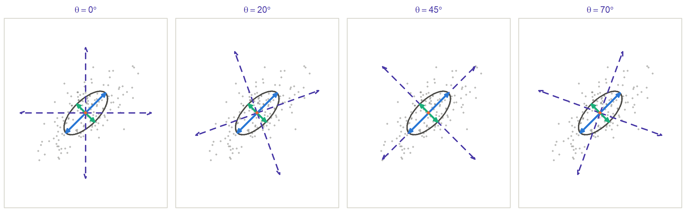
Figure 11: The same four analysts, drawn. The violet dashed rulers spin from panel to panel, and every number describing them changes. The blue and green double-headed axes — the estimate \(\tilde{\mathbf B}\tilde W\) — never move, and neither does the ellipse. Note the axes are drawn as double-headed arrows because an axis is a line, not an arrow; that is the subject of the next section.
Try it yourself turn the rulers — the answer does not turn with them
This is the panel worth spending a minute on, because it is the step people get wrong. Drag the slider slowly and watch the six matrices underneath.
\(R(\theta)\), \(\tilde{\mathbf B}\), \(\tilde S_L\) and \(\tilde W\) all change, every one of them. Watch in particular the off-diagonal entry of \(\tilde S_L\) passing through zero each time a ruler happens to line up with an axis of the ellipse.
Now watch the last box, \(\tilde{\mathbf B}\tilde W\), and the eigenvalues \(\lambda\). They never change, to the last printed digit. Neither do the blue and green axes in the picture. That is the whole content of Equation 15: your choice of rulers is arbitrary, and it cancels.
13 Signs and ties
Two small facts that prevent a lot of confusion when you compare results.
13.1 An eigenvector has no preferred sign
If \(S\mathbf w=\lambda\mathbf w\), multiplying both sides by \(-1\) gives \(S(-\mathbf w)=\lambda(-\mathbf w)\). So \(-\mathbf w\) is an eigenvector with the same eigenvalue, and the equation cannot tell them apart.
Geometrically this is obvious: the long axis of an ellipse is a line, not an arrow. “The data spread along \(\boldsymbol\gamma_2\)” and “the data spread along \(-\boldsymbol\gamma_2\)” are the same statement.
The Kent density agrees. Its exponent contains \((\boldsymbol\gamma_2^{\!\top}\mathbf u)^2\), and \((-\boldsymbol\gamma_2^{\!\top}\mathbf u)^2\) is the same number. Flipping the sign leaves the density completely unchanged. So \(\boldsymbol\gamma_2\) and \(-\boldsymbol\gamma_2\) are not two models; they are one model with two names.
Why it still matters in practice. Software returns whichever sign its algorithm happens to produce. If you fit twice, compare two groups, or average \(\hat{\boldsymbol\gamma}_2\) across bootstrap samples, random sign flips will ruin the comparison. Fix a convention and apply it every time:
make the first non-zero component positive; or
make the largest-in-magnitude component positive (what this document does, in the function fix_sign); or
choose the sign pointing closest to a fixed reference direction.
Any of these is fine. Being consistent is what counts.
One more freedom: \(\boldsymbol\mu\) also has a sign in general directional statistics, but not for us. Compositions map into the positive part of the sphere, so \(\hat{\boldsymbol\mu}\) has non-negative entries and \(-\hat{\boldsymbol\mu}\) is not a possible mean direction. The sign of \(\boldsymbol\mu\)is identified here.
13.2 When the two eigenvalues are equal
Suppose \(\lambda_2=\lambda_3\). Then every direction in the tangent plane has the same spread, the cloud is round, and the “long axis” does not exist. Every vector in the plane is an eigenvector, \(W\) can be any rotation, and a numerical routine will return an essentially arbitrary pair of directions.
Is this a disaster? No, and here is the reassuring part. By Equation 8, \(\lambda_2=\lambda_3\) gives \(\hat\beta=0\), so the fitted model is vMF — and when \(\beta=0\) the Kent density does not contain \(\boldsymbol\gamma_2,\boldsymbol\gamma_3\) at all. The directions became unidentifiable exactly at the moment they stopped mattering.
The practical warning
Trouble comes from the case where \(\lambda_2\) and \(\lambda_3\) are close but not equal. The axes are then formally identified but estimated very badly: a tiny change in the data can swing \(\hat{\boldsymbol\gamma}_2\) by a large angle.
Before interpreting an estimated axis direction, look at the ratio \(\lambda_2/\lambda_3\). A ratio of 2 or more (semi-axis ratio \(\sqrt2\approx1.4\)) is usually enough to see; a ratio of 1.1 is not. If it is near 1, do not tell a story about the orientation — report \(\hat\beta\) with a confidence interval, and if it covers zero, say so.
show the R code that drew this
par(mfrow =c(1, 2), family ="sans")tt <-seq(0, 2*pi, length.out =400)par(mar =c(2.4, 0.5, 1.8, 0.5))plot(NA, xlim =c(-1.5, 1.5), ylim =c(-1.0, 1.0), asp =1, axes =FALSE, xlab ="", ylab ="")title(main ="one ellipse, two names for its axis", cex.main =0.92,font.main =1, col.main = pal$ink2)lines(1.15*cos(tt), 0.48*sin(tt), col = pal$ink2, lwd =2)arrows(0, 0, 1.15, 0, length =0.07, col = pal$g2, lwd =2.4, angle =22)arrows(0, 0, -1.15, 0, length =0.07, col = pal$g2, lwd =2.4, angle =22, lty =2)text( 1.20, 0.14, expression(gamma[2]), col = pal$g2, cex =0.95, font =2, pos =4)text(-1.20, 0.14, expression(-gamma[2]), col = pal$g2, cex =0.95, font =2, pos =2)points(0, 0, pch =16, cex =1.1, col = pal$mu)mtext(expression(paste("the density uses ", (gamma[2]^T * u)^2,", and ", (-gamma[2]^T * u)^2, " is the same number")),side =1, line =0.9, cex =0.72, col = pal$ink2)par(mar =c(2.4, 0.5, 1.8, 0.5))plot(NA, xlim =c(-1.5, 1.5), ylim =c(-1.0, 1.0), asp =1, axes =FALSE, xlab ="", ylab ="")title(main =expression(paste("when ", lambda[2] == lambda[3], ", there is no axis")),cex.main =0.92, font.main =1, col.main = pal$ink2)lines(0.78*cos(tt), 0.78*sin(tt), col = pal$ink2, lwd =2)for (i in0:2) { a <- i *32* pi/180 cl <-if (i ==0) c(pal$g2, pal$g3) elsec(pal$rule, pal$rule) lw <-if (i ==0) 2.2else1.5for (s inc(1, -1)) {arrows(0, 0, s*0.78*cos(a), s*0.78*sin(a), length =0.06, col = cl[1], lwd = lw, lty =2, angle =22)arrows(0, 0, -s*0.78*sin(a), s*0.78*cos(a), length =0.06, col = cl[2], lwd = lw, lty =2, angle =22) }}points(0, 0, pch =16, cex =1.1, col = pal$mu)mtext("every perpendicular pair is an equally valid answer",side =1, line =0.9, cex =0.72, col = pal$ink2)
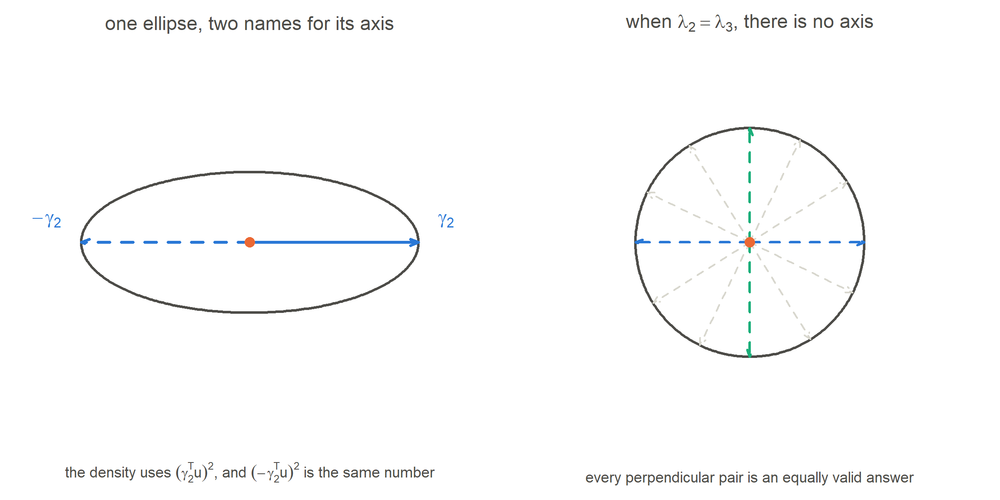
Figure 12: Left:\(\boldsymbol\gamma_2\) and \(-\boldsymbol\gamma_2\) describe the identical ellipse, because the density only ever uses the square of the coordinate. Right: when \(\lambda_2=\lambda_3\) the contour is a circle; the faint dashed pairs show three of the infinitely many equally valid eigenvector pairs. Here \(\beta = 0\), the model is vMF, and the axes have dropped out of the density altogether.
14 Kent versus von Mises–Fisher
Neither is “better” — they answer different questions, and one contains the other.
yes — any \(2\times2\) covariance, so 5 parameters match 5
rotational symmetry about \(\boldsymbol\mu\)
yes
no, unless \(\beta=0\)
normalising constant
closed form, \(\kappa/(4\pi\sinh\kappa)\)
Bessel series in \((\kappa,\beta)\) — needs a computer, but cheap
estimation
one-line moment estimator from \(\bar R\)
mean direction, then an eigen-decomposition on the tangent plane
implied covariance of \(\mathbf z=\mathbf u^2\)
forced to \(\frac4\kappa\{\mathrm{diag}(\boldsymbol\pi)-\boldsymbol\pi\boldsymbol\pi^{\!\top}\}\): the multinomial shape, fixed once the mean is known
free orientation and free axis lengths; can produce positive correlations between parts
14.1 When is the extra flexibility worth it?
Use Kent when:
Two components trade off against each other while a third is stable. That is an ellipse, and vMF cannot represent it.
You care about the direction of variation, not only its size. \(\hat{\boldsymbol\gamma}_2\) is then a scientific result: “the main way these soils differ is sand against clay”.
You are computing likelihoods that will be compared — a leaf likelihood in a random forest, or a model-selection criterion. A misspecified spread contaminates every such comparison.
The correlation structure the data show is not the one the mean predicts. Under vMF, once \(\boldsymbol\pi=\boldsymbol\mu^2\) is fixed, every correlation between parts is fixed too — and all of them are negative.
Use vMF when:
The sample is small. Two extra parameters from 15 observations may cost more in variance than they gain in bias, and \(\hat{\boldsymbol\gamma}_2\) will be unstable (Section 13).
The cloud genuinely looks round — you test \(\beta=0\) and cannot reject it.
You need speed and a closed-form normalising constant in a tight loop.
Because vMF is the \(\beta=0\) case of Kent, the choice is a nested model comparison: fit Kent and test \(H_0:\beta=0\) with a likelihood-ratio test. That is the honest way to decide, rather than arguing about which is “better”.
15 A complete worked example
Twelve soil samples, from raw proportions to a fitted Kent distribution. Every number below is computed by the code in this document — nothing is copied by hand.
Table 3: Twelve soil samples. Each row is one sample: the fractions of sand, silt and clay. Each row sums to 1.
Look at the pattern before doing any mathematics. Sand rises from 0.40 to 0.62 down the table; clay falls from 0.27 to 0.10; silt stays near 0.30 throughout. That is a trade-off between sand and clay, with silt roughly constant. We expect the fitted ellipse to be long in the sand–clay direction and short in the silt direction.
15.2 Step 2 — square roots put them on the sphere
show the R code that drew this
U <-sqrt(Z)knitr::kable(round(cbind(`#`=1:12, U, `||u||^2`=rowSums(U^2)), 4))
#
sand
silt
clay
||u||^2
1
0.6325
0.5745
0.5196
1
2
0.6557
0.5385
0.5292
1
3
0.6708
0.5477
0.5000
1
4
0.6856
0.5292
0.5000
1
5
0.6928
0.5745
0.4359
1
6
0.7071
0.5385
0.4583
1
7
0.7141
0.5385
0.4472
1
8
0.7280
0.5292
0.4359
1
9
0.7416
0.5657
0.3606
1
10
0.7550
0.5385
0.3742
1
11
0.7681
0.5385
0.3464
1
12
0.7874
0.5292
0.3162
1
Table 4: The square-root transform. The last column confirms that every row is now a unit vector.
15.3 Steps 3 to 8 — the whole estimation, in fifteen lines
show the R code that drew this
ubar <-colMeans(U)Rbar <-nrm(ubar)muh <-unit(ubar) # step 3: mean directionM <-second_moment(U) # step 4: second momentB <-householder_B(muh) # step 5: the rulersSL <-crossprod(B, M %*% B) # step 6: projecteg <-eigen(SL, symmetric =TRUE) # step 7: eigen-decompositionlam2 <- eg$values[1]; lam3 <- eg$values[2]W <- eg$vectorsg2 <-fix_sign(drop(B %*% W[, 1])) # step 8: back to 3-dg3 <-fix_sign(drop(B %*% W[, 2]))kap <-0.5* (1/lam2 +1/lam3) # step 9: the parametersbet <-0.25* (1/lam3 -1/lam2)kap_vmf <-2/ (lam2 + lam3) # what vMF would report
Step 3 — the mean direction
sand
silt
clay
ubar (average of the unit vectors)
0.71157
0.54520
0.43528
muh = ubar / ||ubar||
0.71406
0.54711
0.43681
pi-hat = muh^2 (mean composition)
0.50988
0.29932
0.19080
Table 5: The mean direction, and the mean composition you get by squaring it.
\(\bar R=\|\bar{\mathbf u}\|=0.99651\), extremely close to 1. These data are highly concentrated, so the tangent-plane approximation of Section 7 will be excellent.
Step 4 — the second-moment matrix
sand
silt
clay
sand
0.50833
0.38763
0.30679
silt
0.38763
0.29750
0.23749
clay
0.30679
0.23749
0.19417
Table 6: The second-moment matrix. Its trace is 1, as it must be.
\(\operatorname{tr}(\hat M)=1.000000\) and \(\hat{\boldsymbol\mu}^{\!\top}\hat M\hat{\boldsymbol\mu}=0.993043\), so by Equation 11 the total tangent spread must be \(0.006957\).
Steps 5 and 6 — the rulers, and the projection
silt
clay
sand
0.54711
0.43681
silt
-0.04680
-0.83575
clay
-0.83575
0.33274
silt
clay
silt
0.006599
-0.000010
clay
-0.000010
0.000358
Table 7: S_L = B’ M B. The off-diagonal entry is not zero, so the ellipse is tilted relative to the rulers.
\(\operatorname{tr}(S_L)=0.006957\) — it matches the number predicted just above, which is a good check that nothing has gone wrong. And \(\mathbf B^{\!\top}\hat{\boldsymbol\mu}=(1.1e-16,\ 2.8e-17)\), numerically zero: the rulers really do lie in the tangent plane.
Steps 7 and 8 — eigen-decomposition, and back to three dimensions
lambda (eigenvalues of S_L)
0.006599
0.000358
mu_hat
gamma2_hat
gamma3_hat
sand
0.71406
-0.54637
-0.43772
silt
0.54711
0.04540
0.83583
clay
0.43681
0.83631
-0.33134
Table 8: K-hat = [mu-hat, gamma2-hat, gamma3-hat]: the estimated Kent frame.
The frame really is orthogonal: \(\hat{\boldsymbol\gamma}_2^{\!\top}\hat{\boldsymbol\mu}=-1.0e-16\), \(\hat{\boldsymbol\gamma}_2^{\!\top}\hat{\boldsymbol\gamma}_3=9.7e-17\).
15.4 Step 9 — the Kent parameters
quantity
value
how
lambda2
0.006599
larger eigenvalue of S_L: variance along gamma2
lambda3
0.000358
smaller eigenvalue: variance along gamma3
sqrt(lambda2/lambda3)
4.29
how many times longer the ellipse is than it is wide
kappa-hat
1472.3
0.5 * (1/lambda2 + 1/lambda3)
beta-hat
660.4
0.25 * (1/lambda3 - 1/lambda2)
2*beta < kappa ?
yes (2*beta = 1320.7 vs kappa = 1472.3)
the legality check: a unimodal elliptical fit
kappa-hat under vMF
287.5
2 / (lambda2 + lambda3): one number for both directions
Table 9: The fitted parameters, and how each was obtained.
15.5 Step 10 — read the answer in scientific language
The estimated long axis is \(\hat{\boldsymbol\gamma}_2=(-0.546,\ 0.045,\ 0.836)\). Its largest entry belongs to clay and its next largest to sand, and the two have opposite signs. Moving along this axis therefore means clay increases while sand decreases. The remaining component, silt, has coefficient 0.045 — close to zero, so it hardly changes along this axis. The short axis is \(\hat{\boldsymbol\gamma}_3=(-0.438,\ 0.836,\ -0.331)\), with 18.4 times less variance.
The twelve soils have mean composition about (51% sand, 30% silt, 19% clay). They are tightly clustered (\(\bar R=0.9965\), \(\hat\kappa=1472\)) but clearly not clustered in a round way: the fitted ellipse is 4.3 times longer than it is wide (\(\hat\beta=660\)). Almost all of the variation between samples is a trade-off between clay and sand; silt is nearly constant.
A von Mises–Fisher model could not have said any of that. It would have reported the single number \(\hat\kappa_{\text{vMF}}=287\) and implied the same spread in every direction — too much variation in silt and too little along the clay–sand axis.
show the R code that drew this
par(mfrow =c(1, 2))## --- (a) ternary diagram of the raw datatern_panel(list(Z, matrix(muh^2, 1, 3)),cols =c(pal$g2, pal$mu), cexs =c(1.0, 1.7), pchs =c(16, 4),main ="the twelve compositions")## --- (b) tangent-plane view of the fit, axes to true relative scalePtan <-cbind(U %*% g2, U %*% g3)Rt <-3.2*sqrt(lam2)tangent_panel(kap, bet, Rt, n_pts =0, pts = Ptan,ax_len =c(sqrt(lam2), sqrt(lam3)),main ="tangent view of the fit")points(Ptan, pch =16, cex =1.0, col = pal$g2)
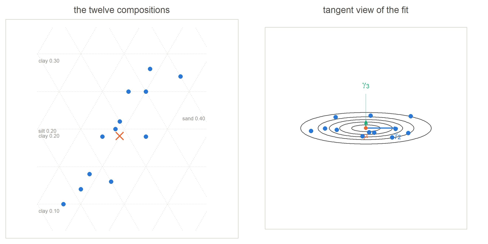
Figure 13: The fit, two ways. Left: the twelve soil compositions in a ternary diagram, with the fitted mean composition as an orange cross; the faint dotted lines are contours of constant sand, silt and clay. Right: the same twelve points projected onto the tangent plane at \(\hat{\boldsymbol\mu}\), with the fitted Kent contours. Here the two axis arrows are drawn to their true relative lengths, one standard deviation each, so you can see directly that \(\sqrt{\lambda_2}\) is about four times \(\sqrt{\lambda_3}\).
show the R code that drew this
## tilt away from mu along gamma3, so that on screen the gamma2 bar runs## across the mu arrow instead of hiding behind itphi <-46* pi/180V <-view_basis(cos(phi)*muh +sin(phi)*g3)par(mar =c(0.3, 0.3, 0.3, 0.3), family ="sans")plot(NA, xlim =c(-1.05, 1.05), ylim =c(-0.42, 1.18), asp =1,axes =FALSE, xlab ="", ylab ="")for (i in1:3) { e <-rep(0, 3); e[i] <-1.14; seg3(c(0,0,0), e, V, pal$rule, lwd =1.2) }draw_sphere(V, octant =TRUE)tangent_patch(muh, B, 0.34, V)arrow3(c(0, 0, 0), muh *1.15, V, pal$mu, lwd =2.4)lab3(muh *1.19, V, expression(hat(mu)), pal$mu, pos =3)s2 <-2.8*sqrt(lam2); s3 <-2.8*sqrt(lam3)seg3(muh - s2*g2, muh + s2*g2, V, pal$g2, lwd =3)seg3(muh - s3*g3, muh + s3*g3, V, pal$g3, lwd =3)lab3(muh + s2*g2, V, expression(hat(gamma)[2]), pal$g2, pos =4)lab3(muh + s3*g3, V, expression(hat(gamma)[3]), pal$g3, pos =1)sphere_pts(U, V, col = pal$g2, cex =0.85, alpha =1)
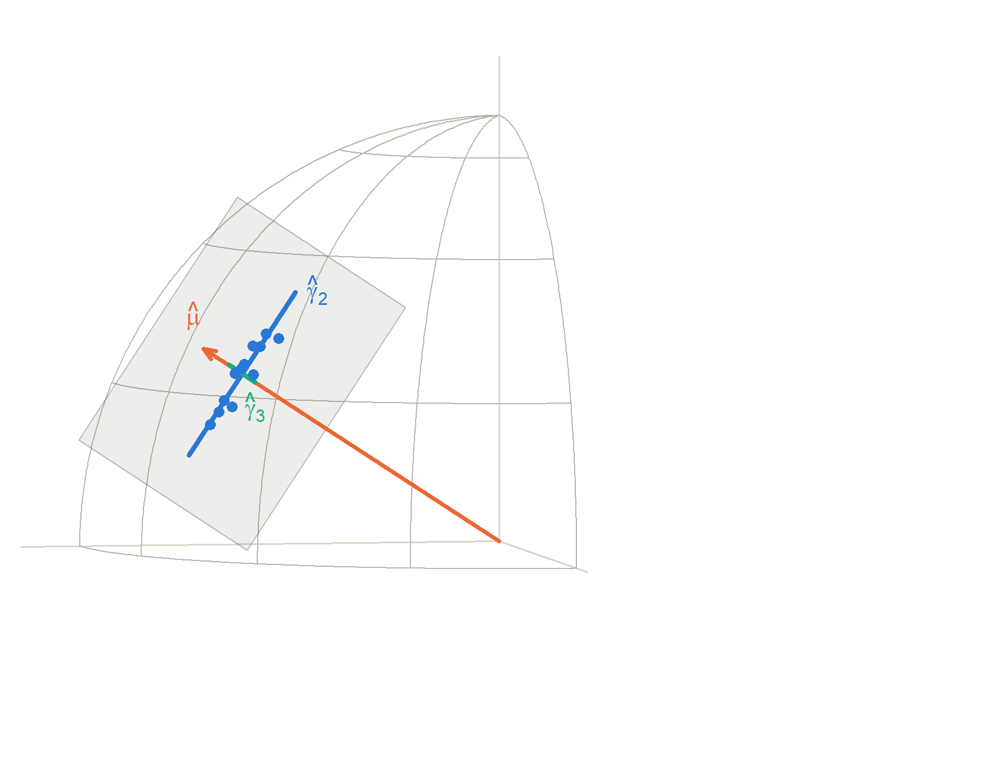
Figure 14: The same fit on the sphere. The wire patch is the positive eighth of \(S^2\) — the only part a composition can reach. Blue dots are the twelve soil samples. The orange arrow is \(\hat{\boldsymbol\mu}\), the pale square is the tangent plane at its tip, and the two coloured bars lying in that plane are \(\hat{\boldsymbol\gamma}_2\) and \(\hat{\boldsymbol\gamma}_3\), drawn as bars rather than arrows because an axis has no preferred sign. The data clearly run along \(\hat{\boldsymbol\gamma}_2\).
show the R code that drew this
sim_comp <-function(n, k, b, seed) { Us <-to_frame(rkent_std(n, k, b, seed), muh, g2, g3) Us^2}par(mfrow =c(1, 2))Zv <-sim_comp(400, kap_vmf, 0, 201)Zk <-sim_comp(400, kap, bet, 202)rng <-list(rbind(Zv, Zk)) # common window for a fair comparisonfor (i in1:2) { Zi <-if (i ==1) Zv else Zktern_panel(list(rng[[1]], Zi, Z, matrix(muh^2, 1, 3)),cols =c(NA, tp(pal$dot, 0.35), pal$g2, pal$mu),cexs =c(0, 0.6, 1.0, 1.7), pchs =c(NA, 16, 16, 4),main =if (i ==1)sprintf("vMF fit (kappa = %.0f)", kap_vmf)elsesprintf("Kent fit (kappa = %.0f, beta = %.0f)", kap, bet))}
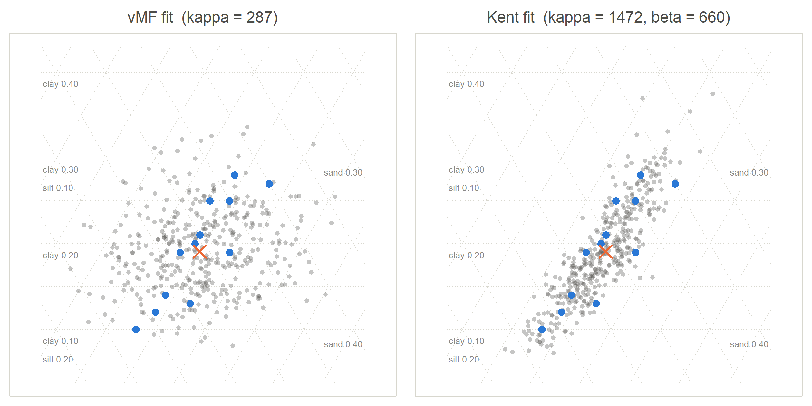
Figure 15: What the two models actually claim about these soils. Four hundred compositions simulated from each fitted model, drawn as grey dots, with the twelve real samples in blue and the fitted mean as an orange cross. Left: vMF can only produce a round blob whose shape is dictated by the mean; it scatters soils into silt-rich and silt-poor regions the data never visit. Right: Kent reproduces the sand–clay trade-off as a long narrow band that follows the real data.
Try it yourself the fitted model on the sphere
drag to rotate · try looking straight down the orange arrow
Rotate until you are looking straight down the orange \(\hat{\boldsymbol\mu}\) arrow: the twelve blue points line up along \(\hat{\boldsymbol\gamma}_2\). Then press the two simulation buttons in turn. The Kent draws form a narrow band lying along the data; the vMF draws form a round blob that spills sideways into places the real soils never go. The grey cloud is what each model believes about soils it has not seen — which is exactly what matters when you use the likelihood for anything.
16 Every parameter in one table
The model parameters
parameter
simple meaning
geometric meaning
what happens when it increases
\(\boldsymbol\mu\)
the central direction
the point on the sphere the cloud sits on; the mode and the mean direction
the whole cloud slides to a new place; its shape is unchanged
\(\kappa>0\)
concentration
the overall size of the ellipse; \(1/\kappa\) is the average tangent variance
the cloud shrinks toward \(\boldsymbol\mu\); both semi-axes get shorter
\(0\le2\beta<\kappa\)
ovalness
how unequal the two tangent variances are
the ellipse stretches along \(\boldsymbol\gamma_2\) and narrows along \(\boldsymbol\gamma_3\); as \(2\beta\to\kappa\) it stops being a single bump
\(\boldsymbol\gamma_2\)
first principal direction
the long axis, perpendicular to \(\boldsymbol\mu\)
not a magnitude — changing it rotates the ellipse about the \(\boldsymbol\mu\) axis
\(\boldsymbol\gamma_3\)
second principal direction
the short axis, perpendicular to both
determined by the other two up to sign, for \(k=3\)
\(\lambda_2=\frac1{\kappa-2\beta}\)
variance along the long axis
\(\sqrt{\lambda_2}\) is the long semi-axis of the one-sigma ellipse
the ellipse gets longer along \(\boldsymbol\gamma_2\)
\(\lambda_3=\frac1{\kappa+2\beta}\)
variance along the short axis
\(\sqrt{\lambda_3}\) is the short semi-axis
the ellipse gets wider along \(\boldsymbol\gamma_3\), i.e. rounder
an orthogonal matrix: the rotation from the standard axes to the data’s own axes
—
The objects used only during estimation
object
size
what it is
does it depend on the data?
\(\hat M\)
\(k\times k\)
second-moment matrix of the unit vectors; \(\operatorname{tr}(\hat M)=1\)
yes — entirely
\(\mathbf B(\hat{\boldsymbol\mu})\)
\(k\times(k-1)\)
Householder basis: two arbitrary perpendicular rulers in the tangent plane
only through \(\hat{\boldsymbol\mu}\); otherwise a convention
\(S_L\)
\((k-1)\times(k-1)\)
\(\mathbf B^{\!\top}\hat M\mathbf B\): the spread written in ruler coordinates
yes, but its entries also depend on the choice of \(\mathbf B\)
\(W\)
\((k-1)\times(k-1)\)
eigenvectors of \(S_L\): the turn from rulers to principal axes
yes; also depends on \(\mathbf B\), in the opposite way to \(S_L\)
\(\Lambda\)
\((k-1)\times(k-1)\)
eigenvalues \(\lambda_2\ge\lambda_3\): the tangent variances
yes; does not depend on \(\mathbf B\)
\(\hat{\mathbf K}\)
\(k\times k\)
\([\hat{\boldsymbol\mu}\;\;\mathbf B W]\): the estimated Kent frame
yes; does not depend on \(\mathbf B\)
The pattern in the last column
\(\mathbf B\) and \(W\) each depend on an arbitrary convention, but their product does not. \(S_L\) depends on it, but its eigenvalues do not. Everything that ends up being reported is free of the convention. That is the design of the method, not a happy accident.
17 The whole pipeline
show the R code that drew this
steps <-list(c("COMPOSITION", "z = (z1, ..., zk), sum of parts = 1", "0"),c("SQUARE ROOT", "u_j = sqrt(z_j)", "0"),c("SPHERE", "||u|| = 1, positive orthant", "0"),c("MEAN DIRECTION", "mu-hat = ubar / ||ubar||", "0"),c("TANGENT PLANE", "B(mu-hat), by Householder reflection", "1"),c("SECOND MOMENT", "M-hat = sum u u' / n, S_L = B' M-hat B", "1"),c("PRINCIPAL DIRECTIONS", "S_L = W L W', [g2 g3] = B W", "2"),c("KENT DISTRIBUTION", "kappa-hat, beta-hat from lambda2, lambda3", "0"))par(mar =c(0.2, 0.2, 0.2, 0.2), family ="sans")n <-length(steps); bh <-0.62; gap <-0.38plot(NA, xlim =c(0, 10), ylim =c(0, n*(bh + gap)), axes =FALSE, xlab ="", ylab ="")for (i inseq_len(n)) { y <- (n - i) * (bh + gap) st <- steps[[i]] bc <-switch(st[3], "0"= pal$rule, "1"= pal$bs, "2"= pal$g3) fc <-switch(st[3], "0"=tp(pal$wash, 1), "1"=tp(pal$bs, 0.06), "2"=tp(pal$g3, 0.07)) lt <-if (st[3] =="1") 2else1rect(0.6, y, 9.4, y + bh, col = fc, border = bc, lwd =1.4, lty = lt)text(0.95, y + bh -0.17, st[1], adj =0, cex =0.66,col =switch(st[3], "0"= pal$mu, "1"= pal$bs, "2"= pal$g3), font =2)text(0.95, y +0.16, st[2], adj =0, cex =0.78, col = pal$ink)if (i < n) arrows(5, y -0.04, 5, y - gap +0.06, length =0.07,col = pal$ink2, lwd =1.6, angle =22)}text(9.3, (n -5)*(bh + gap) +0.31, "depends on a convention", adj =1, cex =0.62, col = pal$bs)text(9.3, (n -6)*(bh + gap) +0.31, "depends on a convention", adj =1, cex =0.62, col = pal$bs)text(9.3, (n -7)*(bh + gap) +0.31, "the convention cancels here", adj =1, cex =0.62, col = pal$g3)
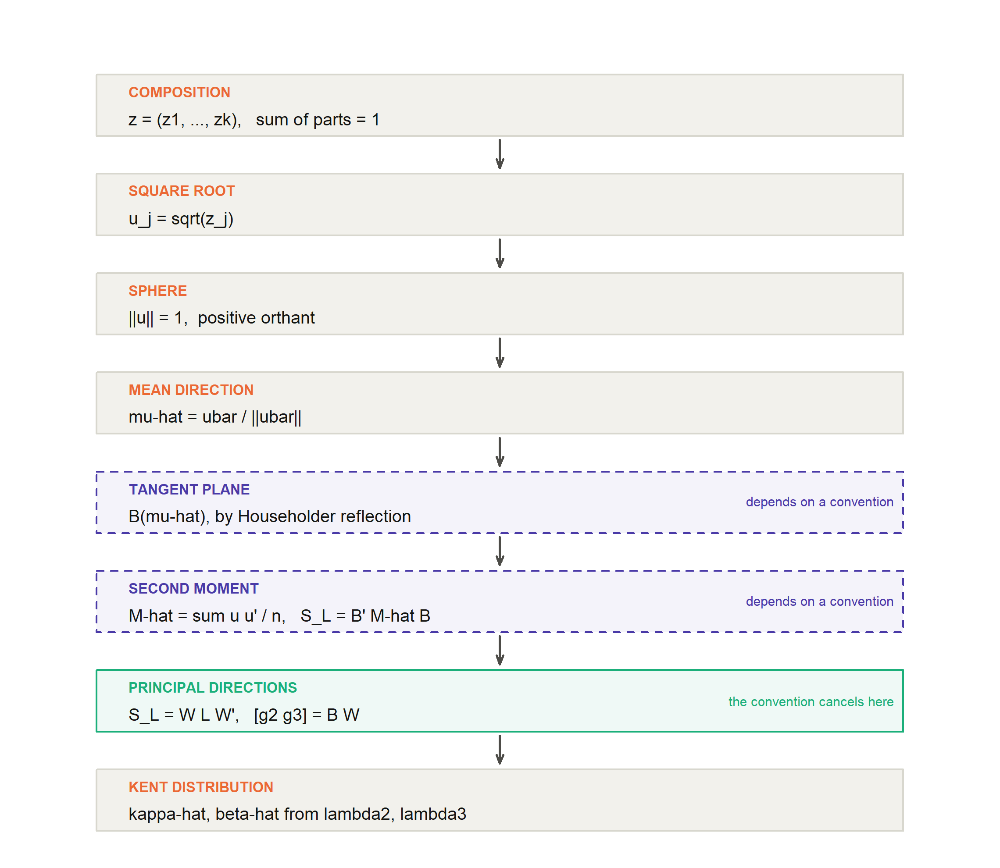
Figure 16: From a composition to a fitted Kent distribution. Each box is an object; each arrow is an operation. The two violet dashed boxes are the ones that depend on an arbitrary convention — and the convention cancels at the step marked in green.
composition \(\longrightarrow\) square-root transformation. Apply \(u_j=\sqrt{z_j}\) to every part. Why: it converts the constraint \(\sum_jz_j=1\) into \(\sum_ju_j^2=1\), which is exactly membership of the unit sphere. It is exact, reversible, and it tolerates zeros. After this step, compositional data are directional data.
square root \(\longrightarrow\) sphere. The transformed data lie on the positive orthant of \(S^{k-1}\). Why: this is what lets us use the whole toolbox of directional statistics. The simplex and the positive orthant hold the same information; the sphere version has the better-behaved geometry.
sphere \(\longrightarrow\) mean direction. Compute \(\bar{\mathbf u}\) and normalise. Why: we need a centre before we can describe spread around the centre. Normalising is necessary because \(\bar{\mathbf u}\) is inside the sphere, not on it. The discarded length \(\bar R\) is kept as a concentration diagnostic.
mean direction \(\longrightarrow\) tangent plane. Build \(\mathbf B(\hat{\boldsymbol\mu})\). Why: spread is a \((k-1)\)-dimensional thing living sideways from \(\hat{\boldsymbol\mu}\), and we need coordinates to measure it in. Without a basis we would be describing a two-dimensional shape with three numbers, one of them redundant.
tangent plane \(\longrightarrow\) second moment. Form \(\hat M\), then \(S_L=\mathbf B^{\!\top}\hat M\mathbf B\). Why:\(\hat M\) records the spread in every direction at once; the sandwich throws away the part along \(\hat{\boldsymbol\mu}\) and keeps the sideways part in ruler coordinates. This is the “flatten the cloud onto the table” step.
second moment \(\longrightarrow\) principal directions. Eigen-decompose and lift back with \([\hat{\boldsymbol\gamma}_2\;\hat{\boldsymbol\gamma}_3]=\mathbf BW\). Why: eigenvectors answer the question “in which direction is the spread greatest?”, which is the definition of \(\boldsymbol\gamma_2\). Multiplying by \(\mathbf B\) turns an answer given in ruler coordinates into a real direction in \(\mathbb R^k\). The arbitrary choice of rulers cancels here.
principal directions \(\longrightarrow\) Kent distribution. Convert the eigenvalues with Equation 8 and assemble Equation 5. Why: the tangent-plane normal approximation links variances to \((\kappa,\beta)\), so estimating the variances estimates the parameters. You now have a full probability model: you can compute likelihoods, simulate new compositions (draw \(\mathbf u\), then set \(\mathbf z=\mathbf u^2\)), compare groups, or use the likelihood inside a larger procedure such as a random-forest leaf.
Going back
Anything computed on the sphere returns to the simplex by squaring. A fitted mean direction becomes a fitted mean composition \(\hat{\boldsymbol\pi}=\hat{\boldsymbol\mu}^2\); a simulated \(\mathbf u\) becomes a simulated composition \(\mathbf u^2\); a contour on the sphere becomes a region in the ternary diagram. The round trip loses nothing.
18 Kent distribution in 10 minutes
Some data are directions, not amounts. A direction is a point on a sphere. Ordinary statistics does not work well there, because the scale wraps around and the average of several points is not itself a direction.
Compositional data — proportions that add up to one — can be turned into directions. Take the square root of each part. The parts still describe the same thing, but now their squares add up to one, which is exactly the rule for being on a sphere. So every composition is a point on the positive corner of a sphere.
The simplest distribution on a sphere is von Mises–Fisher, with a centre \(\boldsymbol\mu\) and a tightness \(\kappa\). Its weakness: the cloud it produces is always round. Real compositions often are not: two components trade off against each other while a third barely moves, which makes a long, narrow cloud.
The Kent distribution fixes this. It adds one term, \(\beta[(\boldsymbol\gamma_2^{\!\top}\mathbf u)^2-(\boldsymbol\gamma_3^{\!\top}\mathbf u)^2]\), which adds probability in one sideways direction and removes it in the perpendicular one. The cloud becomes an ellipse. Setting \(\beta=0\) gives vMF back, so Kent is the bigger family.
Near its centre, a Kent distribution is just a two-dimensional normal distribution painted on the flat plane that touches the sphere at \(\boldsymbol\mu\). Its variances along the two axes are \(\lambda_2=1/(\kappa-2\beta)\) and \(\lambda_3=1/(\kappa+2\beta)\). That one fact explains everything: why \(\kappa\) controls size, why \(\beta\) controls ovalness, and why we need \(2\beta<\kappa\) — otherwise \(\lambda_2\) would not be a positive variance.
To fit it: normalise the average of the unit vectors to get \(\hat{\boldsymbol\mu}\). Compute \(\hat M=\frac1n\sum\mathbf u_i\mathbf u_i^{\!\top}\), whose trace is always 1. Build a basis \(\mathbf B\) for the tangent plane with a Householder reflection — two perpendicular “rulers” laid on the plane, chosen by convention, not by the data. Project: \(S_L=\mathbf B^{\!\top}\hat M\mathbf B\). Its off-diagonal entry is usually not zero, which only means the rulers are not lined up with the cloud. Eigen-decompose \(S_L=W\Lambda W^{\!\top}\): the eigenvalues are the two tangent variances and \(W\) is the turn that lines the rulers up. Finally \([\hat{\boldsymbol\gamma}_2\;\hat{\boldsymbol\gamma}_3]=\mathbf BW\), and \(\hat\kappa,\hat\beta\) come from the eigenvalues.
The step people find confusing is the last one. \(\mathbf B\) is not \(\mathbf K\). \(\mathbf B\) is where you happened to put your rulers; \(\mathbf K\) is the shape the data actually have. Change \(\mathbf B\) and \(S_L\) changes and \(W\) changes in the opposite way, so that the product \(\mathbf BW\) stays exactly the same. The arbitrary choice cancels.
What you get at the end is a proper probability model for compositions: a centre, a size, an ovalness, and a direction of maximum variation you can interpret scientifically — for example, “these soils differ mainly along a sand-versus-clay axis, and hardly at all in silt”.
19 The five most important things to remember
The square root is exact, not an approximation.\(\sum_jz_j=1\) becomes \(\sum_ju_j^2=1\). A composition is a point on the positive part of a sphere, and you always get back by squaring.
vMF is round; Kent is oval. vMF depends on \(\mathbf u\) only through the angle to \(\boldsymbol\mu\), so it must be the same in every sideways direction. Kent adds one squared term that breaks this, and vMF is the \(\beta=0\) case of Kent.
Near \(\boldsymbol\mu\), Kent is a 2-d normal on the tangent plane, with variances \(\lambda_2=1/(\kappa-2\beta)\) and \(\lambda_3=1/(\kappa+2\beta)\). Everything about \(\kappa\), \(\beta\) and the constraint \(2\beta<\kappa\) follows from this.
\(\mathbf B\) is the rulers; \(\mathbf K\) is the stain.\(\mathbf B\) is a convention built from \(\hat{\boldsymbol\mu}\) alone and knows nothing about the data. \(W\), from the eigen-decomposition, is the only part that looks at the data. \(\hat{\mathbf K}=[\hat{\boldsymbol\mu}\;\;\mathbf BW]\).
Change the rulers and nothing you report changes.\(\tilde{\mathbf B}=\mathbf BR\) gives \(\tilde S_L=R^{\!\top}S_LR\) and \(\tilde W=R^{\!\top}W\), so \(\tilde{\mathbf B}\tilde W=\mathbf BW\). The eigenvalues are untouched too. Invariance is why the method is trustworthy.
20 Test yourself
No answers here, on purpose. Try each one on paper first; the section in brackets is where to look.
The composition \(\mathbf z=(0.16,0.36,0.48)\) is measured. Compute \(\mathbf u=\sqrt{\mathbf z}\) and verify \(\|\mathbf u\|=1\). Which corner of the sphere does it lie in? Section 3
A colleague fits a vMF distribution and reports \(\hat\kappa=80\). Roughly what is the typical angular distance of an observation from \(\hat{\boldsymbol\mu}\), in degrees? What is the corresponding tangent variance? Section 4
A Kent fit gives \(\kappa=50\) and \(\beta=20\). Compute \(\lambda_2\) and \(\lambda_3\) and the ratio of the semi-axes. Is the constraint satisfied? Now try \(\beta=25\) and explain in words what goes wrong. Section 6
Explain, without writing a formula, why \(\operatorname{tr}(\hat M)=1\) no matter what the data are. Then say what would be wrong if you computed \(\hat M\) and got a trace of 0.97. Section 8
Suppose \(\hat{\boldsymbol\mu}=(0,1,0)\). Carry out the Householder construction by hand: write down \(\mathbf h\), \(\mathbf h^{\!\top}\mathbf h\), \(H\), and read off \(\mathbf b_1\) and \(\mathbf b_2\). Verify that both are perpendicular to \(\hat{\boldsymbol\mu}\). Section 9
You compute \(S_L=\left(\begin{smallmatrix}0.04&0\\0&0.04\end{smallmatrix}\right)\). What are \(\hat{\boldsymbol\gamma}_2\) and \(\hat{\boldsymbol\gamma}_3\)? What is \(\hat\beta\)? Why is the first question not really a fair one? Section 11
You compute \(S_L=\left(\begin{smallmatrix}0.05&-0.03\\-0.03&0.05\end{smallmatrix}\right)\). Find the eigenvalues and eigenvectors by hand. Compare with the example in Section 11 and explain what the change of sign in the off-diagonal entry did to the long axis. Section 10
Two students analyse the same data. Student A uses the Householder basis; student B uses a basis rotated by \(25^\circ\). Which of these differ between them, and which are identical: \(\hat{\boldsymbol\mu}\), \(\hat M\), \(\mathbf B\), \(S_L\), \(\lambda_2\), \(W\), \(\hat{\boldsymbol\gamma}_2\), \(\hat\kappa\), \(\hat\beta\)? Section 12
A referee writes: “the Kent model has five parameters for \(k=3\), so it is over-parameterised compared with vMF’s three.” Give a one-paragraph reply that mentions the two-dimensional normal distribution. Section 14
In the soil example, \(\hat{\boldsymbol\gamma}_2\) came out with a large positive entry for one component and a large negative entry for another. Translate that into a sentence about soils that a non-statistician would understand. Then say what \(\hat{\boldsymbol\gamma}_3\) is telling you. Section 15
Under vMF with mean composition \(\boldsymbol\pi=(0.5,0.3,0.2)\), the correlation between the second and third parts is fixed at about \(-0.33\) whatever \(\kappa\) is. Where does that number come from, and why can Kent produce a different one? Section 14
Your data have \(\lambda_2=0.021\) and \(\lambda_3=0.019\). Would you report an estimated direction of maximum variation? Justify your answer. Section 13
Further reading
Kent, J. T. (1982). The Fisher–Bingham distribution on the sphere. Journal of the Royal Statistical Society B44, 71–80. The original paper, including the exact moment estimators.
Mardia, K. V. and Jupp, P. E. (2000). Directional Statistics. Wiley. The standard reference.
Scealy, J. L. and Welsh, A. H. (2011). Regression for compositional data by using distributions defined on the hypersphere. Journal of the Royal Statistical Society B73, 351–375. The square-root/sphere approach to compositional data, and the source of the Householder parameterisation used here.
Session information
R version 4.5.3 (2026-03-11 ucrt)
platform: x86_64-w64-mingw32
rendered: 2026-09-30 14:30
packages used: base R graphics and stats only